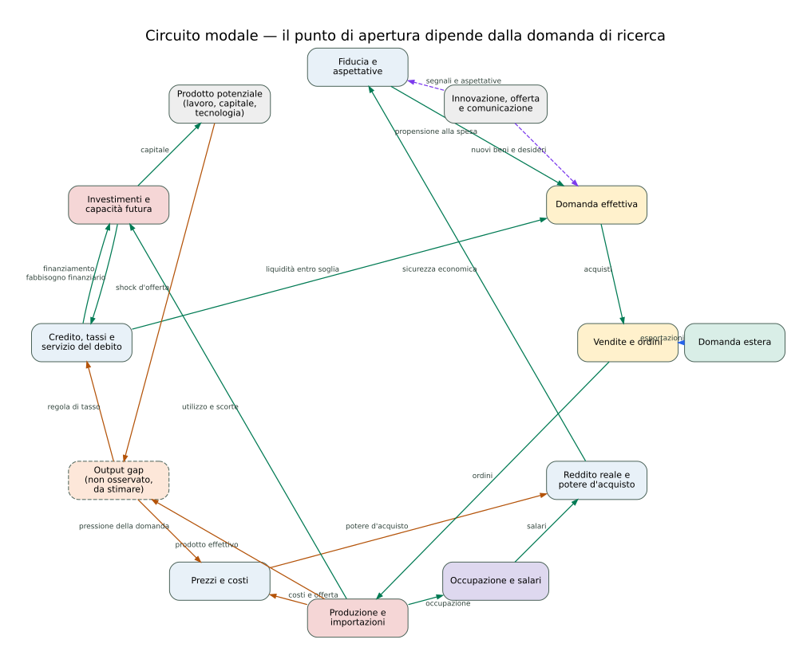
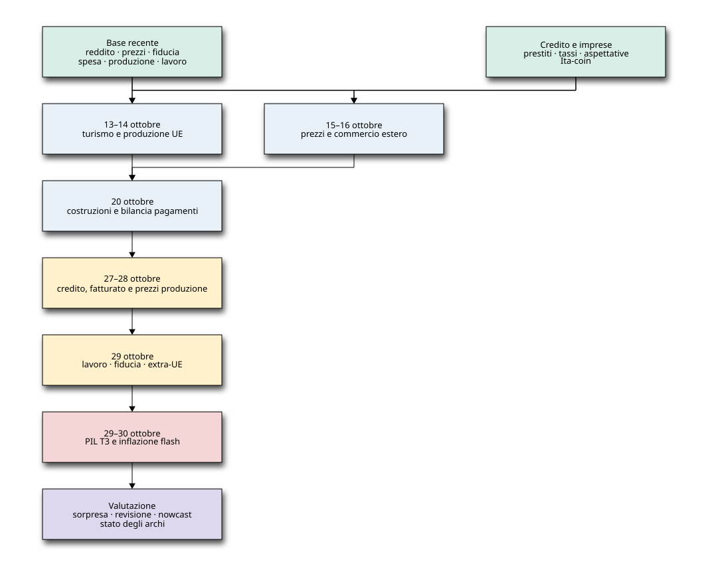
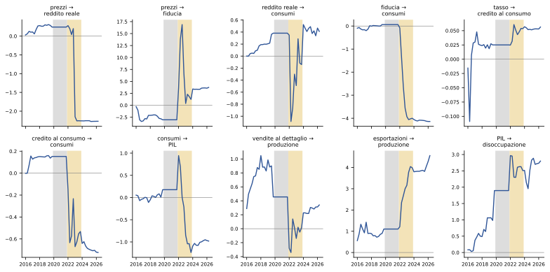
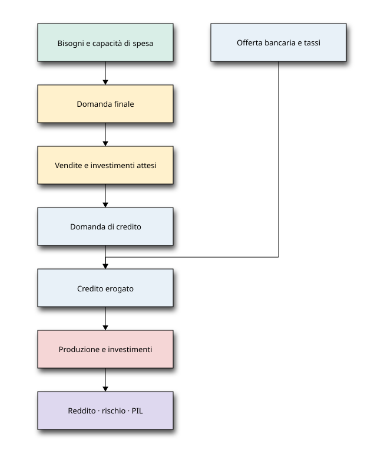

<!DOCTYPE html>
<html xmlns="http://www.w3.org/1999/xhtml" lang="it" xml:lang="it"><head>

<meta charset="utf-8">
<meta name="generator" content="quarto-1.9.36">

<meta name="viewport" content="width=device-width, initial-scale=1.0, user-scalable=yes">

<meta name="author" content="Paolo Volterra">
<meta name="keywords" content="bisogni, consumi, domanda effettiva, produzione, credito, PIL, nowcasting">
<meta name="description" content="Il documento sviluppa un metodo per mappare le variabili economiche aggiornate nel tempo, ricondurle a concetti osservabili e latenti e formulare relazioni causa-effetto verificabili.">

<title>Mappa causale dell’economia – Paolo Volterra</title>
<style>
/* Default styles provided by pandoc.
** See https://pandoc.org/MANUAL.html#variables-for-html for config info.
*/
code{white-space: pre-wrap;}
span.smallcaps{font-variant: small-caps;}
div.columns{display: flex; gap: min(4vw, 1.5em);}
div.column{flex: auto; overflow-x: auto;}
div.hanging-indent{margin-left: 1.5em; text-indent: -1.5em;}
ul.task-list{list-style: none;}
ul.task-list li input[type="checkbox"] {
  width: 0.8em;
  margin: 0 0.8em 0.2em -1em; /* quarto-specific, see https://github.com/quarto-dev/quarto-cli/issues/4556 */ 
  vertical-align: middle;
}
/* CSS for citations */
div.csl-bib-body { }
div.csl-entry {
  clear: both;
  margin-bottom: 0em;
}
.hanging-indent div.csl-entry {
  margin-left:2em;
  text-indent:-2em;
}
div.csl-left-margin {
  min-width:2em;
  float:left;
}
div.csl-right-inline {
  margin-left:2em;
  padding-left:1em;
}
div.csl-indent {
  margin-left: 2em;
}</style>


<script src="../../site_libs/quarto-nav/quarto-nav.js"></script>
<script src="../../site_libs/quarto-nav/headroom.min.js"></script>
<script src="../../site_libs/clipboard/clipboard.min.js"></script>
<script src="../../site_libs/quarto-search/autocomplete.umd.js"></script>
<script src="../../site_libs/quarto-search/fuse.min.js"></script>
<script src="../../site_libs/quarto-search/quarto-search.js"></script>
<meta name="quarto:offset" content="../../">
<script src="../../site_libs/quarto-html/quarto.js" type="module"></script>
<script src="../../site_libs/quarto-html/tabsets/tabsets.js" type="module"></script>
<script src="../../site_libs/quarto-html/popper.min.js"></script>
<script src="../../site_libs/quarto-html/tippy.umd.min.js"></script>
<script src="../../site_libs/quarto-html/anchor.min.js"></script>
<link href="../../site_libs/quarto-html/tippy.css" rel="stylesheet">
<link href="../../site_libs/quarto-html/quarto-syntax-highlighting-845c23b38eaddc0f92fda52bfe77a8c8.css" rel="stylesheet" id="quarto-text-highlighting-styles">
<script src="../../site_libs/bootstrap/bootstrap.min.js"></script>
<link href="../../site_libs/bootstrap/bootstrap-icons.css" rel="stylesheet">
<link href="../../site_libs/bootstrap/bootstrap-fa4f38eef25807c3a4d306831343ef48.min.css" rel="stylesheet" append-hash="true" id="quarto-bootstrap" data-mode="light">
<script id="quarto-search-options" type="application/json">{
  "location": "navbar",
  "copy-button": false,
  "collapse-after": 3,
  "panel-placement": "end",
  "type": "overlay",
  "limit": 50,
  "keyboard-shortcut": [
    "f",
    "/",
    "s"
  ],
  "show-item-context": false,
  "language": {
    "search-no-results-text": "Nessun risultato",
    "search-matching-documents-text": "documenti trovati",
    "search-copy-link-title": "Copiare il link nella ricerca",
    "search-hide-matches-text": "Nascondere i risultati aggiuntivi",
    "search-more-match-text": "ci sono altri risultati in questo documento",
    "search-more-matches-text": "ulteriori risultati in questo documento",
    "search-clear-button-title": "Pulire",
    "search-text-placeholder": "",
    "search-detached-cancel-button-title": "Cancellare",
    "search-submit-button-title": "Inviare",
    "search-label": "Ricerca"
  }
}</script>
<script data-goatcounter="https://paolovolterra.goatcounter.com/count" async="" src="//gc.zgo.at/count.js"></script>

  <script src="https://cdnjs.cloudflare.com/polyfill/v3/polyfill.min.js?features=es6"></script>
  <script defer="" src="https://cdn.jsdelivr.net/npm/mathjax@3/es5/tex-chtml-full.js" type="text/javascript"></script>

<script type="text/javascript">
const typesetMath = (el) => {
  if (window.MathJax) {
    // MathJax Typeset
    window.MathJax.typeset([el]);
  } else if (window.katex) {
    // KaTeX Render
    var mathElements = el.getElementsByClassName("math");
    var macros = [];
    for (var i = 0; i < mathElements.length; i++) {
      var texText = mathElements[i].firstChild;
      if (mathElements[i].tagName == "SPAN" && texText && texText.data) {
        window.katex.render(texText.data, mathElements[i], {
          displayMode: mathElements[i].classList.contains('display'),
          throwOnError: false,
          macros: macros,
          fleqn: false
        });
      }
    }
  }
}
window.Quarto = {
  typesetMath
};
</script>

<link rel="stylesheet" href="../../MCC.css">
<meta property="og:title" content="Mappa causale dell’economia – Paolo Volterra">
<meta property="og:description" content="Il documento sviluppa un metodo per mappare le variabili economiche aggiornate nel tempo, ricondurle a concetti osservabili e latenti e formulare relazioni causa-effetto verificabili.">
<meta property="og:image" content="https://paolovolterra.com/posts/2610_MappaCausaleEconomia/">
<meta property="og:site_name" content="Paolo Volterra">
<meta name="twitter:title" content="Mappa causale dell’economia – Paolo Volterra">
<meta name="twitter:description" content="Il documento sviluppa un metodo per mappare le variabili economiche aggiornate nel tempo, ricondurle a concetti osservabili e latenti e formulare relazioni causa-effetto verificabili.">
<meta name="twitter:image" content="https://paolovolterra.com/posts/2610_MappaCausaleEconomia/">
<meta name="twitter:card" content="summary_large_image">
</head>

<body class="nav-fixed quarto-light">

<div id="quarto-search-results"></div>
  <header id="quarto-header" class="headroom fixed-top">
    <nav class="navbar navbar-expand-lg " data-bs-theme="dark">
      <div class="navbar-container container-fluid">
      <div class="navbar-brand-container mx-auto">
    <a class="navbar-brand" href="../../index.html">
    <span class="navbar-title">Paolo Volterra</span>
    </a>
  </div>
            <div id="quarto-search" class="" title="Ricerca"></div>
          <button class="navbar-toggler" type="button" data-bs-toggle="collapse" data-bs-target="#navbarCollapse" aria-controls="navbarCollapse" role="menu" aria-expanded="false" aria-label="Attiva/disattiva la navigazione" onclick="if (window.quartoToggleHeadroom) { window.quartoToggleHeadroom(); }">
  <span class="navbar-toggler-icon"></span>
</button>
          <div class="collapse navbar-collapse" id="navbarCollapse">
            <ul class="navbar-nav navbar-nav-scroll me-auto">
  <li class="nav-item">
    <a class="nav-link" href="../../index.html"> 
<span class="menu-text">Home</span></a>
  </li>  
  <li class="nav-item">
    <a class="nav-link" href="../../posts.html"> 
<span class="menu-text">Studi</span></a>
  </li>  
  <li class="nav-item">
    <a class="nav-link" href="../../about.html"> 
<span class="menu-text">Chi sono</span></a>
  </li>  
</ul>
            <ul class="navbar-nav navbar-nav-scroll ms-auto">
  <li class="nav-item compact">
    <a class="nav-link" href="../../posts.xml"> <i class="bi bi-rss" role="img" aria-label="RSS">
</i> 
<span class="menu-text"></span></a>
  </li>  
  <li class="nav-item compact">
    <a class="nav-link" href="https://github.com/paolovolterra"> <i class="bi bi-github" role="img" aria-label="GitHub">
</i> 
<span class="menu-text"></span></a>
  </li>  
  <li class="nav-item compact">
    <a class="nav-link" href="https://www.linkedin.com/in/paolo-volterra-08596b6"> <i class="bi bi-linkedin" role="img" aria-label="LinkedIn">
</i> 
<span class="menu-text"></span></a>
  </li>  
  <li class="nav-item compact">
    <a class="nav-link" href="https://bsky.app/profile/ghibbli.bsky.social"> <i class="bi bi-bluesky" role="img" aria-label="Bluesky">
</i> 
<span class="menu-text"></span></a>
  </li>  
</ul>
          </div> <!-- /navcollapse -->
            <div class="quarto-navbar-tools">
</div>
      </div> <!-- /container-fluid -->
    </nav>
</header>
<!-- content -->
<div id="quarto-content" class="quarto-container page-columns page-rows-contents page-layout-article page-navbar">
<!-- sidebar -->
<!-- margin-sidebar -->
    <div id="quarto-margin-sidebar" class="sidebar margin-sidebar">
        <nav id="TOC" role="doc-toc" class="toc-active">
    <h2 id="toc-title">Indice</h2>
   
  <ul>
  <li><a href="#oggetto-dellanalisi" id="toc-oggetto-dellanalisi" class="nav-link active" data-scroll-target="#oggetto-dellanalisi"><span class="header-section-number">1</span> Oggetto dell’analisi</a></li>
  <li><a href="#tre-ipotesi-concorrenti" id="toc-tre-ipotesi-concorrenti" class="nav-link" data-scroll-target="#tre-ipotesi-concorrenti"><span class="header-section-number">2</span> Tre ipotesi concorrenti</a></li>
  <li><a href="#dal-bisogno-alla-domanda-effettiva" id="toc-dal-bisogno-alla-domanda-effettiva" class="nav-link" data-scroll-target="#dal-bisogno-alla-domanda-effettiva"><span class="header-section-number">3</span> Dal bisogno alla domanda effettiva</a></li>
  <li><a href="#il-sistema-di-trasmissione" id="toc-il-sistema-di-trasmissione" class="nav-link" data-scroll-target="#il-sistema-di-trasmissione"><span class="header-section-number">4</span> Il sistema di trasmissione</a></li>
  <li><a href="#sequenza-causale-operativa-e-formule-econometriche" id="toc-sequenza-causale-operativa-e-formule-econometriche" class="nav-link" data-scroll-target="#sequenza-causale-operativa-e-formule-econometriche"><span class="header-section-number">5</span> Sequenza causale operativa e formule econometriche</a>
  <ul class="collapse">
  <li><a href="#prezzi-e-capacità-reale-di-spesa" id="toc-prezzi-e-capacità-reale-di-spesa" class="nav-link" data-scroll-target="#prezzi-e-capacità-reale-di-spesa"><span class="header-section-number">5.1</span> Prezzi e capacità reale di spesa</a></li>
  <li><a href="#capacità-di-spesa-fiducia-e-consumi" id="toc-capacità-di-spesa-fiducia-e-consumi" class="nav-link" data-scroll-target="#capacità-di-spesa-fiducia-e-consumi"><span class="header-section-number">5.2</span> Capacità di spesa, fiducia e consumi</a></li>
  <li><a href="#domanda-e-offerta-di-credito" id="toc-domanda-e-offerta-di-credito" class="nav-link" data-scroll-target="#domanda-e-offerta-di-credito"><span class="header-section-number">5.3</span> Domanda e offerta di credito</a></li>
  <li><a href="#spesa-vendite-e-ordini" id="toc-spesa-vendite-e-ordini" class="nav-link" data-scroll-target="#spesa-vendite-e-ordini"><span class="header-section-number">5.4</span> Spesa, vendite e ordini</a></li>
  <li><a href="#vendite-scorte-e-produzione" id="toc-vendite-scorte-e-produzione" class="nav-link" data-scroll-target="#vendite-scorte-e-produzione"><span class="header-section-number">5.5</span> Vendite, scorte e produzione</a></li>
  <li><a href="#produzione-lavoro-e-reddito-successivo" id="toc-produzione-lavoro-e-reddito-successivo" class="nav-link" data-scroll-target="#produzione-lavoro-e-reddito-successivo"><span class="header-section-number">5.6</span> Produzione, lavoro e reddito successivo</a></li>
  <li><a href="#vendite-attese-capacità-e-investimenti" id="toc-vendite-attese-capacità-e-investimenti" class="nav-link" data-scroll-target="#vendite-attese-capacità-e-investimenti"><span class="header-section-number">5.7</span> Vendite attese, capacità e investimenti</a></li>
  <li><a href="#chiusura-aggregata-e-propagazione-degli-shock" id="toc-chiusura-aggregata-e-propagazione-degli-shock" class="nav-link" data-scroll-target="#chiusura-aggregata-e-propagazione-degli-shock"><span class="header-section-number">5.8</span> Chiusura aggregata e propagazione degli shock</a></li>
  </ul></li>
  <li><a href="#le-pubblicazioni-come-osservazioni-successive" id="toc-le-pubblicazioni-come-osservazioni-successive" class="nav-link" data-scroll-target="#le-pubblicazioni-come-osservazioni-successive"><span class="header-section-number">6</span> Le pubblicazioni come osservazioni successive</a></li>
  <li><a href="#tempo-economico-e-tempo-informativo" id="toc-tempo-economico-e-tempo-informativo" class="nav-link" data-scroll-target="#tempo-economico-e-tempo-informativo"><span class="header-section-number">7</span> Tempo economico e tempo informativo</a></li>
  <li><a href="#agenda-dei-prossimi-test" id="toc-agenda-dei-prossimi-test" class="nav-link" data-scroll-target="#agenda-dei-prossimi-test"><span class="header-section-number">8</span> Agenda dei prossimi test</a></li>
  <li><a href="#dallinventario-delle-variabili-al-grafo-causale" id="toc-dallinventario-delle-variabili-al-grafo-causale" class="nav-link" data-scroll-target="#dallinventario-delle-variabili-al-grafo-causale"><span class="header-section-number">9</span> Dall’inventario delle variabili al grafo causale</a></li>
  <li><a href="#programma-empirico" id="toc-programma-empirico" class="nav-link" data-scroll-target="#programma-empirico"><span class="header-section-number">10</span> Programma empirico</a></li>
  <li><a href="#primi-risultati-il-ciclo-dei-prezzi-2021-2023" id="toc-primi-risultati-il-ciclo-dei-prezzi-2021-2023" class="nav-link" data-scroll-target="#primi-risultati-il-ciclo-dei-prezzi-2021-2023"><span class="header-section-number">11</span> Primi risultati: il ciclo dei prezzi 2021-2023</a>
  <ul class="collapse">
  <li><a href="#il-consumo-è-prevedibile-il-riferimento-di-hall" id="toc-il-consumo-è-prevedibile-il-riferimento-di-hall" class="nav-link" data-scroll-target="#il-consumo-è-prevedibile-il-riferimento-di-hall"><span class="header-section-number">11.1</span> Il consumo è prevedibile? Il riferimento di Hall</a></li>
  </ul></li>
  <li><a href="#la-catena-continua-dal-2016-registro-delle-evidenze" id="toc-la-catena-continua-dal-2016-registro-delle-evidenze" class="nav-link" data-scroll-target="#la-catena-continua-dal-2016-registro-delle-evidenze"><span class="header-section-number">12</span> La catena continua dal 2016: registro delle evidenze</a></li>
  <li><a href="#rapporto-con-il-primo-nowcast-del-credito" id="toc-rapporto-con-il-primo-nowcast-del-credito" class="nav-link" data-scroll-target="#rapporto-con-il-primo-nowcast-del-credito"><span class="header-section-number">13</span> Rapporto con il primo nowcast del credito</a></li>
  <li><a href="#rappresentazione-e-aggiornamento" id="toc-rappresentazione-e-aggiornamento" class="nav-link" data-scroll-target="#rappresentazione-e-aggiornamento"><span class="header-section-number">14</span> Rappresentazione e aggiornamento</a></li>
  <li><a href="#governance-delle-affermazioni" id="toc-governance-delle-affermazioni" class="nav-link" data-scroll-target="#governance-delle-affermazioni"><span class="header-section-number">15</span> Governance delle affermazioni</a></li>
  <li><a href="#riferimenti" id="toc-riferimenti" class="nav-link" data-scroll-target="#riferimenti"><span class="header-section-number">16</span> Riferimenti</a>
  <ul class="collapse">
  <li><a href="#note" id="toc-note" class="nav-link" data-scroll-target="#note"><span class="header-section-number">16.1</span> Note</a></li>
  </ul></li>
  </ul>
<div class="toc-actions"><ul><li><a href="https://github.com/paolovolterra/paolovolterra.github.io/issues/new" class="toc-action"><i class="bi empty"></i>Segnala un problema</a></li></ul></div></nav>
    </div>
<!-- main -->
<main class="content" id="quarto-document-content">

<header id="title-block-header" class="quarto-title-block default">
<div class="quarto-title">
<h1 class="title">Mappa causale dell’economia</h1>
<p class="subtitle lead">Dalle variabili osservate alle relazioni economiche e al nowcasting</p>
  <div class="quarto-categories">
    <div class="quarto-category">Macroeconomia</div>
    <div class="quarto-category">PIL</div>
    <div class="quarto-category">Nowcasting</div>
  </div>
  </div>

<div>
  <div class="description">
    Il documento sviluppa un metodo per mappare le variabili economiche aggiornate nel tempo, ricondurle a concetti osservabili e latenti e formulare relazioni causa-effetto verificabili.
  </div>
</div>


<div class="quarto-title-meta">

    <div>
    <div class="quarto-title-meta-heading">Autore/Autrice</div>
    <div class="quarto-title-meta-contents">
             <p>Paolo Volterra <a href="https://orcid.org/0009-0004-2229-7519" class="quarto-title-author-orcid"> </a></p>
          </div>
  </div>
    
    <div>
    <div class="quarto-title-meta-heading">Data di Pubblicazione</div>
    <div class="quarto-title-meta-contents">
      <p class="date">11 ottobre 2026</p>
    </div>
  </div>
  
    <div>
    <div class="quarto-title-meta-heading">Data di modifica</div>
    <div class="quarto-title-meta-contents">
      <p class="date-modified">13 ottobre 2026</p>
    </div>
  </div>
    
  </div>
  
<div>
  <div class="abstract">
    <div class="block-title">Sommario</div>
    <p><strong>Italiano.</strong> Il documento sviluppa un metodo per mappare le variabili economiche aggiornate nel tempo, ricondurle a concetti osservabili e latenti e formulare relazioni causa-effetto verificabili. La proposta integra frequenze, ritardi di pubblicazione, revisioni, vincoli finanziari, mercati esteri e retroazioni; organizza le pubblicazioni periodiche di ISTAT e Banca d’Italia come osservazioni successive di un sistema economico interdipendente.</p>
    <p><strong>English.</strong> This document develops a method for mapping economic variables updated over time, linking them to observable and latent concepts, and formulating testable cause-and-effect relationships. It integrates frequencies, publication lags, revisions, financial constraints, foreign markets and feedback loops; and organises periodic releases by the Italian National Institute of Statistics and the Bank of Italy as successive observations of an interdependent economic system.</p>
  </div>
</div>

<div>
  <div class="keywords">
    <div class="block-title">Parole chiave</div>
    <p>bisogni, consumi, domanda effettiva, produzione, credito, PIL, nowcasting</p>
  </div>
</div>

</header>


<section id="oggetto-dellanalisi" class="level1" data-number="1">
<h1 data-number="1"><span class="header-section-number">1</span> Oggetto dell’analisi</h1>
<div class="callout callout-style-simple callout-none no-icon">
<div class="callout-body d-flex">
<div class="callout-icon-container">
<i class="callout-icon no-icon"></i>
</div>
<div class="callout-body-container">
<div class="callout-header d-flex align-content-center">
<div class="callout-icon-container">

</div>
<div class="callout-title-container flex-fill">
<p><span class="screen-reader-only">Nota</span>Documento in lavorazione</p>
</div>
</div>
<div class="callout-body-container callout-body">
<p>Il documento è un programma di ricerca aperto. Le sezioni registrano ipotesi, primi risultati, dubbi e approfondimenti ancora da svolgere; ogni risultato empirico è provvisorio e può essere rivisto quando cambiano i dati, i metodi o la letteratura.</p>
</div>
</div>
</div>
</div>
<p>Il prodotto interno lordo misura il valore della produzione finale realizzata in un periodo, ma non identifica da solo l’impulso che mette in movimento il sistema economico. Se la domanda di ricerca riguarda una crescita sostenuta dai consumi interni, il PIL va letto come esito aggregato del periodo e quindi come punto di verifica della catena. Il PIL è però anche reddito: salari e profitti generati dalla produzione alimentano il reddito disponibile del periodo successivo, per cui il PIL è un nodo del circuito e non soltanto il suo punto d’arrivo.</p>
<p>L’osservazione empirica non parte da una singola variabile e neppure da un concetto teorico scelto in anticipo. Parte da centinaia di serie economiche che descrivono famiglie, imprese, banche, amministrazioni pubbliche e rapporti con l’estero e che vengono aggiornate con frequenze, ritardi e revisioni differenti. Lo scopo iniziale è censire e descrivere queste informazioni senza imporre una direzione causale prematura.</p>
<p>Dopo la mappatura, gruppi di variabili possono essere ricondotti a concetti osservabili o latenti attraverso la letteratura e l’analisi empirica. I bisogni sono uno dei possibili costrutti interpretativi del sottosistema dei consumi, non un’assunzione iniziale né una variabile direttamente osservata. Il Sistema europeo dei conti (SEC 2010, paragrafo 3.94) definisce i consumi finali come spese per beni e servizi utilizzati per la soddisfazione diretta di bisogni o desideri individuali e collettivi <span class="citation" data-cites="ue2013Sec2010 eurostat2026Namq10gdp"><a href="#ref-ue2013Sec2010" role="doc-biblioref">[1]</a>, <a href="#ref-eurostat2026Namq10gdp" role="doc-biblioref">[2]</a></span>.<a href="#fn1" class="footnote-ref" id="fnref1" role="doc-noteref"><sup>1</sup></a></p>
</section>
<section id="tre-ipotesi-concorrenti" class="level1" data-number="2">
<h1 data-number="2"><span class="header-section-number">2</span> Tre ipotesi concorrenti</h1>
<p>L’impostazione <strong>market-oriented</strong>, termine che proviene dagli studi sull’orientamento delle imprese al mercato <span class="citation" data-cites="kohli1990Market"><a href="#ref-kohli1990Market" role="doc-biblioref">[3]</a></span> e che qui indica la trasmissione dalla domanda alla produzione, assume che bisogni e preferenze alimentino la domanda e che la produzione risponda ai segnali provenienti dal mercato. La letteratura post-keynesiana sul consumo rappresenta i bisogni come gerarchici, separabili e progressivamente saziabili <span class="citation" data-cites="lavoie2004Consumer drakopoulos1999Choice"><a href="#ref-lavoie2004Consumer" role="doc-biblioref">[4]</a>, <a href="#ref-drakopoulos1999Choice" role="doc-biblioref">[5]</a></span>.<a href="#fn2" class="footnote-ref" id="fnref2" role="doc-noteref"><sup>2</sup></a> La dinamica strutturale parte dall’osservazione che la struttura della produzione cambia in modo sistematico durante lo sviluppo <span class="citation" data-cites="pasinetti1993Dynamics"><a href="#ref-pasinetti1993Dynamics" role="doc-biblioref">[6]</a></span>.<a href="#fn3" class="footnote-ref" id="fnref3" role="doc-noteref"><sup>3</sup></a> Pasinetti attribuisce questo cambiamento all’evoluzione della domanda finale, che modifica la composizione settoriale della produzione e dell’occupazione <span class="citation" data-cites="pasinetti1981Structural"><a href="#ref-pasinetti1981Structural" role="doc-biblioref">[7]</a></span>. L’economia evolutiva osserva che la teoria della crescita dedica poca attenzione ai processi che permettono alla domanda di espandersi insieme alla varietà dei beni e alle conoscenze dei consumatori <span class="citation" data-cites="witt2001Learning"><a href="#ref-witt2001Learning" role="doc-biblioref">[8]</a></span>.<a href="#fn4" class="footnote-ref" id="fnref4" role="doc-noteref"><sup>4</sup></a></p>
<p>L’impostazione <strong>product-oriented</strong>, associata alla critica di Galbraith <span class="citation" data-cites="galbraith1958Affluent galbraith1967Industrial"><a href="#ref-galbraith1958Affluent" role="doc-biblioref">[9]</a>, <a href="#ref-galbraith1967Industrial" role="doc-biblioref">[10]</a></span>, considera invece produzione, innovazione e comunicazione capaci di formare o amplificare desideri e domanda. Le due ipotesi non vanno confuse.</p>
<p>Una terza impostazione, prevalente nella macroeconomia contemporanea, attribuisce all’offerta la determinazione del prodotto nel lungo periodo. Lavoro, capitale e progresso tecnico fissano il prodotto potenziale <span class="citation" data-cites="solow1956Contribution"><a href="#ref-solow1956Contribution" role="doc-biblioref">[11]</a></span>, mentre la domanda spiega soprattutto gli scostamenti di breve periodo da quel livello. In questa lettura la domanda delle famiglie conta per il ciclo, non per la crescita di lungo periodo. La distinzione è verificabile: gli shock di domanda dovrebbero avere effetti temporanei sul prodotto, quelli di offerta effetti permanenti <span class="citation" data-cites="blanchard1989Dynamic"><a href="#ref-blanchard1989Dynamic" role="doc-biblioref">[12]</a></span>.</p>
<p>Il modello empirico dovrà quindi verificare la trasmissione dalla domanda alla produzione, la possibile retroazione dall’offerta alla domanda e il vincolo posto nel lungo periodo dal prodotto potenziale.</p>
<table class="caption-top table">
<colgroup>
<col style="width: 14%">
<col style="width: 38%">
<col style="width: 45%">
</colgroup>
<thead>
<tr class="header">
<th style="text-align: left;">Ipotesi</th>
<th style="text-align: left;">Direzione prevalente</th>
<th style="text-align: left;">Meccanismo osservabile</th>
</tr>
</thead>
<tbody>
<tr class="odd">
<td style="text-align: left;">Market-oriented</td>
<td style="text-align: left;">bisogni → domanda → produzione</td>
<td style="text-align: left;">reddito e fiducia anticipano consumi, vendite e produzione</td>
</tr>
<tr class="even">
<td style="text-align: left;">Product-oriented</td>
<td style="text-align: left;">produzione e comunicazione → desideri → domanda</td>
<td style="text-align: left;">offerta, innovazioni e promozione precedono nuove categorie di consumo</td>
</tr>
<tr class="odd">
<td style="text-align: left;">Offerta e prodotto potenziale</td>
<td style="text-align: left;">lavoro, capitale e tecnologia → prodotto potenziale; domanda → scostamenti ciclici</td>
<td style="text-align: left;">gli shock di domanda hanno effetti temporanei sul prodotto, quelli di offerta effetti permanenti</td>
</tr>
</tbody>
</table>
<p>Tabella&nbsp;1: Ipotesi teoriche concorrenti</p>
<p><em>In parole semplici:</em> il primo modello parte da ciò che le persone cercano di soddisfare; il secondo considera la capacità delle imprese di creare nuovi desideri e mercati; il terzo ricorda che, nel lungo periodo, quanto un’economia può produrre dipende da lavoratori, macchinari e tecnologia.</p>
</section>
<section id="dal-bisogno-alla-domanda-effettiva" class="level1" data-number="3">
<h1 data-number="3"><span class="header-section-number">3</span> Dal bisogno alla domanda effettiva</h1>
<p>Il timore del consumatore non elimina necessariamente il bisogno. Può rinviare l’acquisto, ridurne quantità o qualità, favorire un prodotto meno costoso oppure spostare la spesa verso le componenti essenziali. L’aumento del risparmio precauzionale interrompe quindi il passaggio dalla domanda desiderata alla spesa effettiva.</p>
<p>Il reddito disponibile reale rappresenta la capacità corrente di spesa, non una misura dei bisogni. Nel secondo trimestre del 2026 il reddito disponibile nominale delle famiglie consumatrici è aumentato dello 0,4 per cento sul trimestre precedente, mentre il potere d’acquisto è diminuito dello 0,9 per cento e la spesa per consumi, in valore nominale, è cresciuta dell’1,7 per cento <span class="citation" data-cites="istat2026RedditoFamiglieQ2"><a href="#ref-istat2026RedditoFamiglieQ2" role="doc-biblioref">[13]</a></span>.<a href="#fn5" class="footnote-ref" id="fnref5" role="doc-noteref"><sup>5</sup></a> La propensione al risparmio è scesa di 1,2 punti, al 6,7 per cento: le famiglie hanno sostenuto la spesa riducendo il risparmio. Lo scarto mostra che reddito reale, risparmio e consumo devono essere osservati congiuntamente.</p>
<p>Il dato va nella direzione opposta al risparmio precauzionale descritto sopra. Nel secondo trimestre le famiglie hanno attenuato la perdita di potere d’acquisto riducendo il risparmio, come prevede la teoria del livellamento dei consumi quando lo shock al reddito è percepito come temporaneo <span class="citation" data-cites="jappelli2010Consumption"><a href="#ref-jappelli2010Consumption" role="doc-biblioref">[14]</a></span>. Il calo della fiducia di settembre potrebbe invertire questo comportamento nei trimestri successivi; l’ipotesi sarà verificata con il conto delle famiglie del terzo trimestre.</p>
<div class="callout callout-style-simple callout-none no-icon">
<div class="callout-body d-flex">
<div class="callout-icon-container">
<i class="callout-icon no-icon"></i>
</div>
<div class="callout-body-container">
<div class="callout-header d-flex align-content-center">
<div class="callout-icon-container">

</div>
<div class="callout-title-container flex-fill">
<p><span class="screen-reader-only">Consiglio</span>Un precedente: lo shock dei prezzi del 2021-2023</p>
</div>
</div>
<div class="callout-body-container callout-body">
<p>Fra agosto 2021 e ottobre 2023 l’inflazione armonizzata italiana è rimasta al di sopra del 2 per cento, con un massimo del 12,6 per cento nell’ottobre 2022 <span class="citation" data-cites="eurostat2026PrcHicpMinr"><a href="#ref-eurostat2026PrcHicpMinr" role="doc-biblioref">[15]</a></span>. In quel periodo il reddito disponibile reale per abitante è cresciuto di circa 1,5 punti logaritmici fra il secondo trimestre 2021 e il quarto trimestre 2023, i consumi reali per abitante di circa 5 punti; la differenza è stata coperta per circa l’82 per cento dalla riduzione della propensione al risparmio, scesa dal 14,8 al 12,3 per cento <span class="citation" data-cites="eurostat2026Nasq10ki eurostat2026Namq10gdp eurostat2026Namq10pe"><a href="#ref-eurostat2026Namq10gdp" role="doc-biblioref">[2]</a>, <a href="#ref-eurostat2026Nasq10ki" role="doc-biblioref">[16]</a>, <a href="#ref-eurostat2026Namq10pe" role="doc-biblioref">[17]</a></span>.</p>
<p>Il calo partiva però dai livelli elevati della pandemia: il minimo del periodo, 10,6 per cento nel quarto trimestre 2022, era appena sotto la media 2015-2019 (10,8 per cento). Nel secondo trimestre 2026 la stessa misura è al 9,5 per cento, sotto quella media. Se la riduzione del risparmio dovesse ripetersi, partirebbe da un livello più basso e lascerebbe un margine più sottile.</p>
</div>
</div>
</div>
</div>
<div class="callout callout-style-simple callout-none no-icon">
<div class="callout-body d-flex">
<div class="callout-icon-container">
<i class="callout-icon no-icon"></i>
</div>
<div class="callout-body-container">
<div class="callout-header d-flex align-content-center">
<div class="callout-icon-container">

</div>
<div class="callout-title-container flex-fill">
<p><span class="screen-reader-only">Avviso</span>Dubbio: due misure del risparmio</p>
</div>
</div>
<div class="callout-body-container callout-body">
<p>La propensione al risparmio dell’ISTAT (6,7 per cento nel secondo trimestre 2026) riguarda le famiglie consumatrici; quella di Eurostat usata nel riquadro precedente (9,5 per cento) comprende anche le famiglie produttrici e le istituzioni senza scopo di lucro e rapporta il risparmio lordo al reddito disponibile corretto per la variazione dei diritti pensionistici. I livelli non sono confrontabili fra le due fonti; i confronti nel tempo vanno fatti all’interno della stessa misura.</p>
</div>
</div>
</div>
</div>
<p>Il credito può anticipare nel tempo la possibilità di spesa, ma incontra limiti nel reddito atteso, nel patrimonio, nel servizio del debito, nei tassi e nei criteri bancari. La risposta dei consumi alle variazioni del reddito deve essere stimata distinguendo aspettative, natura dello shock e condizioni delle famiglie <span class="citation" data-cites="jappelli2010Consumption"><a href="#ref-jappelli2010Consumption" role="doc-biblioref">[14]</a></span>.<a href="#fn6" class="footnote-ref" id="fnref6" role="doc-noteref"><sup>6</sup></a> Occorre pertanto distinguere la domanda di credito dalla sua offerta e dalle quantità effettivamente erogate.</p>
</section>
<section id="il-sistema-di-trasmissione" class="level1" data-number="4">
<h1 data-number="4"><span class="header-section-number">4</span> Il sistema di trasmissione</h1>
<p>La sequenza delle variabili forma un <strong>circuito modale</strong>: reddito, aspettative, domanda, credito, produzione, occupazione, prezzi e investimenti si influenzano attraverso retroazioni e stati accumulati. Il circuito non possiede un’origine economica unica. La variabile iniziale è il punto nel quale l’analista decide di aprire il ciclo per rispondere a una domanda determinata.</p>
<p>Questa scelta non attribuisce alla variabile selezionata una priorità ontologica. Stabilisce soltanto il verso del test, l’orizzonte temporale e le conseguenze da seguire. Se l’analisi parte da uno shock dei prezzi, si osservano potere d’acquisto, consumi e produzione; se parte dalla fiducia, si osservano spesa, vendite e investimenti; se parte dal credito, si separano domanda e offerta bancaria e si seguono gli effetti sull’attività. La chiusura del percorso riporta comunque alle variabili iniziali attraverso reddito, prezzi, debito, ricchezza e aspettative.</p>
<p></p>
<p>Figura&nbsp;1: Circuito modale delle variabili economiche: un possibile punto di apertura e le retroazioni</p>
<p><em>In parole semplici:</em> il diagramma non afferma che l’economia cominci dai bisogni. Mostra un circuito che può essere aperto in punti differenti: siamo noi a scegliere la prima variabile in funzione della relazione che vogliamo verificare.</p>
<p>Il circuito comprende un modulo neokeynesiano che rende operativa l’ipotesi dal lato dell’offerta <span class="citation" data-cites="woodford2003Interest kva2026Scientific"><a href="#ref-woodford2003Interest" role="doc-biblioref">[18]</a>, <a href="#ref-kva2026Scientific" role="doc-biblioref">[19]</a></span>. L’output gap è la distanza fra il prodotto effettivo e il prodotto potenziale, cioè quello che si avrebbe con prezzi pienamente flessibili. Il gap non è osservato e va stimato. Quando è positivo spinge i prezzi verso l’alto e indica alla banca centrale un rialzo dei tassi; quando è negativo indica il contrario. Uno shock d’offerta negativo, come un rincaro dell’energia, riduce il prodotto potenziale più di quello effettivo: il gap diventa positivo anche se la produzione cala.<a href="#fn7" class="footnote-ref" id="fnref7" role="doc-noteref"><sup>7</sup></a> La stessa variabile osservata, una produzione in calo, porta così a conclusioni opposte a seconda che lo shock venga dalla domanda o dall’offerta.</p>
<table class="caption-top table">
<colgroup>
<col style="width: 12%">
<col style="width: 27%">
<col style="width: 26%">
<col style="width: 32%">
</colgroup>
<thead>
<tr class="header">
<th style="text-align: left;">Modalità di apertura</th>
<th style="text-align: left;">Variabile scelta</th>
<th style="text-align: left;">Percorso osservato per primo</th>
<th style="text-align: left;">Retroazione che chiude il circuito</th>
</tr>
</thead>
<tbody>
<tr class="odd">
<td style="text-align: left;">Capacità di spesa</td>
<td style="text-align: left;">reddito disponibile reale</td>
<td style="text-align: left;">consumi → vendite → produzione</td>
<td style="text-align: left;">occupazione e salari → nuovo reddito</td>
</tr>
<tr class="even">
<td style="text-align: left;">Aspettative</td>
<td style="text-align: left;">fiducia di famiglie o imprese</td>
<td style="text-align: left;">spesa e investimenti → ordini</td>
<td style="text-align: left;">attività e occupazione → nuova fiducia</td>
</tr>
<tr class="odd">
<td style="text-align: left;">Prezzi</td>
<td style="text-align: left;">inflazione o prezzo dell’energia</td>
<td style="text-align: left;">potere d’acquisto e costi → domanda e margini</td>
<td style="text-align: left;">produzione e salari → nuovi prezzi</td>
</tr>
<tr class="even">
<td style="text-align: left;">Credito</td>
<td style="text-align: left;">tassi, criteri di offerta o domanda di prestiti</td>
<td style="text-align: left;">credito erogato → consumi e investimenti</td>
<td style="text-align: left;">reddito, rischio e debito → nuove condizioni creditizie</td>
</tr>
<tr class="odd">
<td style="text-align: left;">Domanda estera</td>
<td style="text-align: left;">ordini, esportazioni o spesa turistica</td>
<td style="text-align: left;">vendite estere → produzione e importazioni</td>
<td style="text-align: left;">reddito interno e competitività → capacità di esportare</td>
</tr>
<tr class="even">
<td style="text-align: left;">Attività produttiva</td>
<td style="text-align: left;">produzione, fatturato o scorte</td>
<td style="text-align: left;">occupazione, reddito e investimenti</td>
<td style="text-align: left;">domanda interna ed estera → vendite successive</td>
</tr>
</tbody>
</table>
<p>Tabella&nbsp;2: Possibili aperture dello stesso circuito causale</p>
<p><em>In parole semplici:</em> la stessa economia può essere studiata partendo da punti diversi. La scelta è valida quando dichiara quale variabile apre l’analisi, quali effetti saranno seguiti e quale ritorno chiude il circuito.</p>
<p>La variabile di apertura sarà scelta mediante cinque criteri: pertinenza rispetto alla domanda di ricerca, precedenza economica plausibile, disponibilità nel calendario reale, qualità e stabilità della misura, possibilità di distinguere lo shock iniziale dalle altre cause. Per il nowcasting può essere utile aprire il circuito con il nuovo rilascio; per una tesi causale è preferibile partire da uno shock o da una variazione identificabile, anche se pubblicata più tardi.</p>
</section>
<section id="sequenza-causale-operativa-e-formule-econometriche" class="level1" data-number="5">
<h1 data-number="5"><span class="header-section-number">5</span> Sequenza causale operativa e formule econometriche</h1>
<p>Il circuito viene aperto, per il primo ciclo di verifica, in corrispondenza di prezzi e capacità reale di spesa. Questa apertura è provvisoria e può essere ruotata nei cicli successivi. La sequenza dei paragrafi segue il percorso prezzi → reddito reale → aspettative → spesa e credito → vendite interne ed estere → produzione → lavoro e investimenti → reddito successivo → verifica aggregata. Ogni passaggio dichiara che cosa è un’identità, che cosa è una relazione stimabile e quale condizione aggiuntiva è necessaria per interpretarla causalmente.</p>
<section id="prezzi-e-capacità-reale-di-spesa" class="level2" data-number="5.1">
<h2 data-number="5.1" class="anchored" data-anchor-id="prezzi-e-capacità-reale-di-spesa"><span class="header-section-number">5.1</span> Prezzi e capacità reale di spesa</h2>
<p>Il primo passaggio trasforma le risorse nominali in capacità reale di acquisto. La relazione di base è un’identità, non una stima causale:</p>
<p><span class="math display">\[R_t = \frac{Y^{d}_t}{P^C_t}, \qquad \Delta \log R_t \simeq \Delta \log Y^{d}_t - \pi^C_t,\]</span></p>
<p>dove <span class="math inline">\(Y^{d}_t\)</span> è il reddito disponibile nominale, <span class="math inline">\(P^C_t\)</span> il deflatore dei consumi e <span class="math inline">\(R_t\)</span> il potere d’acquisto. L’identità misura l’erosione reale prodotta dai prezzi; non stabilisce da sola se la variazione dei prezzi derivi da domanda, offerta, energia o margini.</p>
</section>
<section id="capacità-di-spesa-fiducia-e-consumi" class="level2" data-number="5.2">
<h2 data-number="5.2" class="anchored" data-anchor-id="capacità-di-spesa-fiducia-e-consumi"><span class="header-section-number">5.2</span> Capacità di spesa, fiducia e consumi</h2>
<p>La spesa dipende dalle risorse correnti e attese, dalla fiducia, dalla ricchezza e dal desiderio di risparmiare. Una prima specificazione a correzione dell’errore unisce la dinamica di breve periodo a una relazione di lungo periodo fra consumi, reddito reale e ricchezza <span class="citation" data-cites="davidson1978Econometric"><a href="#ref-davidson1978Econometric" role="doc-biblioref">[20]</a></span>:</p>
<p><span class="math display">\[\Delta \log C_t = \alpha + \sum_{\ell=1}^{L}\beta_{\ell}\Delta\log R_{t-\ell} + \sum_{\ell=1}^{L}\gamma_{\ell}F_{t-\ell} - \lambda\left(\log C_{t-1} - \theta_R \log R_{t-1} - \theta_W \log W_{t-1}\right) + \eta r_t + \varepsilon_t,\]</span></p>
<p>dove <span class="math inline">\(C_t\)</span> indica i consumi reali, <span class="math inline">\(F_t\)</span> la fiducia, <span class="math inline">\(W_t\)</span> la ricchezza e <span class="math inline">\(r_t\)</span> il costo reale del finanziamento. Il termine fra parentesi misura la distanza dei consumi dal loro livello di equilibrio e <span class="math inline">\(\lambda\)</span> la velocità con cui vi ritornano. Reddito e ricchezza entrano in livello soltanto in questa relazione di lungo periodo, perché sono serie non stazionarie. I regressori partono dal primo ritardo: il potere d’acquisto contemporaneo contiene il deflatore dei consumi ed è determinato insieme alla spesa. I coefficienti descrivono intensità e ritardo; per attribuire un effetto causale alla fiducia occorre separarla dalle notizie su reddito, prezzi e occupazione già conosciute dalle famiglie <span class="citation" data-cites="jappelli2010Consumption"><a href="#ref-jappelli2010Consumption" role="doc-biblioref">[14]</a></span>.</p>
</section>
<section id="domanda-e-offerta-di-credito" class="level2" data-number="5.3">
<h2 data-number="5.3" class="anchored" data-anchor-id="domanda-e-offerta-di-credito"><span class="header-section-number">5.3</span> Domanda e offerta di credito</h2>
<p>Il credito osservato è il risultato congiunto della domanda del debitore e dell’offerta bancaria. Le due componenti non sono identificabili dalla sola quantità erogata. Una rappresentazione minima, nella tradizione dei modelli di mercato in disequilibrio <span class="citation" data-cites="fair1972Methods maddala1974Maximum"><a href="#ref-fair1972Methods" role="doc-biblioref">[21]</a>, <a href="#ref-maddala1974Maximum" role="doc-biblioref">[22]</a></span>, è:</p>
<p><span class="math display">\[\begin{aligned} L^d_t &amp;= \alpha_d + \beta_d E_t(Y_{t+1}) - \gamma_d i_t + u^d_t,\\ L^s_t &amp;= \alpha_s + \delta_s i_t - \beta_s \text{Rischio}_t - \gamma_s \text{Criteri}_t + u^s_t,\\ L_t &amp;= \min(L^d_t,L^s_t). \end{aligned}\]</span></p>
<p>dove <span class="math inline">\(L^d_t\)</span> e <span class="math inline">\(L^s_t\)</span> sono domanda e offerta di prestiti, <span class="math inline">\(L_t\)</span> il credito erogato, <span class="math inline">\(i_t\)</span> il tasso sui prestiti, <span class="math inline">\(\text{Rischio}_t\)</span> il rischio percepito dalle banche e <span class="math inline">\(\text{Criteri}_t\)</span> i criteri di concessione. Per le imprese il segno di <span class="math inline">\(\beta_d\)</span> non è certo: quando le vendite calano, la domanda di prestiti può aumentare per finanziare scorte e capitale circolante e diminuire soltanto in seguito, con il rinvio degli investimenti. L’indagine sul credito bancario serve a distinguere variazioni della domanda, criteri di offerta e quantità effettivamente concesse. L’ultima equazione stabilisce che il credito erogato è il minore fra domanda e offerta: quando il vincolo è l’offerta, la domanda di finanziamento non soddisfatta non si traduce in spesa.</p>
</section>
<section id="spesa-vendite-e-ordini" class="level2" data-number="5.4">
<h2 data-number="5.4" class="anchored" data-anchor-id="spesa-vendite-e-ordini"><span class="header-section-number">5.4</span> Spesa, vendite e ordini</h2>
<p>Consumi, investimenti e domanda estera diventano segnali osservabili dalle imprese attraverso vendite e ordini. Il ponte empirico può essere scritto come:</p>
<p><span class="math display">\[\Delta \log V_t = \alpha + \sum_{\ell=0}^{L}\beta_{\ell}\Delta\log C_{t-\ell} + \sum_{\ell=0}^{L}\theta_{\ell}\Delta\log X^d_{t-\ell} + \Gamma'Z_t + e_t,\]</span></p>
<p>dove <span class="math inline">\(V_t\)</span> comprende vendite e ordini, mentre <span class="math inline">\(X^d_t\)</span> rappresenta la domanda estera. Importazioni, prezzi e scorte devono essere controllati per distinguere crescita dei volumi, variazioni nominali e sostituzione con beni prodotti all’estero.</p>
</section>
<section id="vendite-scorte-e-produzione" class="level2" data-number="5.5">
<h2 data-number="5.5" class="anchored" data-anchor-id="vendite-scorte-e-produzione"><span class="header-section-number">5.5</span> Vendite, scorte e produzione</h2>
<p>La produzione è legata alle vendite da un’identità: in volume, ciò che viene prodotto è venduto oppure accumulato in magazzino, <span class="math inline">\(Q_t \equiv V_t + \Delta S_t\)</span>. Le imprese adeguano quindi la produzione alle vendite attese e alla distanza delle scorte dal livello desiderato <span class="citation" data-cites="lovell1961Manufacturers blinder1991Taking"><a href="#ref-lovell1961Manufacturers" role="doc-biblioref">[23]</a>, <a href="#ref-blinder1991Taking" role="doc-biblioref">[24]</a></span>:</p>
<p><span class="math display">\[\Delta\log Q_t = \alpha + \sum_{\ell=1}^{L}\beta_{\ell}\Delta\log V_{t-\ell} - \gamma\left(\log S_{t-1} - \log V_{t-1} - \kappa\right) + \rho\,\Delta\log Q_{t-1}+\varepsilon_t,\]</span></p>
<p>dove <span class="math inline">\(S_t\)</span> indica le scorte e <span class="math inline">\(\kappa\)</span> il logaritmo del rapporto desiderato fra scorte e vendite. Il segno atteso delle vendite è positivo; quello delle scorte eccedenti è negativo. Empiricamente la produzione è più variabile delle vendite, il che contraddice l’idea che le scorte servano soltanto ad attenuarne le oscillazioni <span class="citation" data-cites="blinder1991Taking"><a href="#ref-blinder1991Taking" role="doc-biblioref">[24]</a></span>.<a href="#fn8" class="footnote-ref" id="fnref8" role="doc-noteref"><sup>8</sup></a> La produzione può inoltre anticipare vendite attese oppure reagire a shock di offerta, perciò l’ordine temporale deve essere verificato e non imposto.</p>
</section>
<section id="produzione-lavoro-e-reddito-successivo" class="level2" data-number="5.6">
<h2 data-number="5.6" class="anchored" data-anchor-id="produzione-lavoro-e-reddito-successivo"><span class="header-section-number">5.6</span> Produzione, lavoro e reddito successivo</h2>
<p>La risposta dell’occupazione alla produzione può essere stimata mediante un’elasticità dinamica, nella tradizione della legge di Okun <span class="citation" data-cites="okun1962Potential"><a href="#ref-okun1962Potential" role="doc-biblioref">[25]</a></span>:</p>
<p><span class="math display">\[\Delta\log N_t = lpha + \sum_{\ell=0}^{L}\beta_{\ell}\Delta\log Q_{t-\ell} + \Gamma'Z_t + \varepsilon_t,\]</span></p>
<p>dove <span class="math inline">\(N_t\)</span> indica l’occupazione e <span class="math inline">\(Q_t\)</span> la produzione. Ore lavorate, produttività, composizione settoriale e contratti modificano la trasmissione. Salari e occupazione alimentano quindi il reddito disponibile del periodo successivo, chiudendo una prima retroazione verso la capacità di spesa.</p>
</section>
<section id="vendite-attese-capacità-e-investimenti" class="level2" data-number="5.7">
<h2 data-number="5.7" class="anchored" data-anchor-id="vendite-attese-capacità-e-investimenti"><span class="header-section-number">5.7</span> Vendite attese, capacità e investimenti</h2>
<p>Gli investimenti dipendono dalle vendite attese, dal grado di utilizzo della capacità, dal costo del capitale e dal credito. Una forma dell’acceleratore che include il costo d’uso del capitale <span class="citation" data-cites="jorgenson1963Capital"><a href="#ref-jorgenson1963Capital" role="doc-biblioref">[26]</a></span> e la disponibilità di finanziamento <span class="citation" data-cites="fazzari1988Financing"><a href="#ref-fazzari1988Financing" role="doc-biblioref">[27]</a></span> è:</p>
<p><span class="math display">\[\frac{I_t}{K_{t-1}} = \alpha + \beta \frac{E_t(\Delta V_{t+1})}{K_{t-1}} + \gamma U_t - \delta UCC_t + \phi \frac{\Delta L_t}{K_{t-1}} + \varepsilon_t,\]</span></p>
<p>dove <span class="math inline">\(U_t\)</span> è l’utilizzo della capacità, <span class="math inline">\(UCC_t\)</span> il costo d’uso del capitale e <span class="math inline">\(\Delta L_t\)</span> il nuovo credito erogato. I flussi sono rapportati allo stock di capitale, così che i coefficienti abbiano la stessa scala. L’uso del credito o della liquidità come prova di vincoli finanziari è controverso, perché entrambi riflettono anche le prospettive di vendita. Il modello dovrà ammettere soglie: quando vendite attese e utilizzo sono bassi, una riduzione dei tassi può non produrre nuovi investimenti.</p>
</section>
<section id="chiusura-aggregata-e-propagazione-degli-shock" class="level2" data-number="5.8">
<h2 data-number="5.8" class="anchored" data-anchor-id="chiusura-aggregata-e-propagazione-degli-shock"><span class="header-section-number">5.8</span> Chiusura aggregata e propagazione degli shock</h2>
<p>Consumi, investimenti, spesa pubblica ed esportazioni nette confluiscono nell’identità del prodotto:</p>
<p><span class="math display">\[Y_t = C_t + I_t + G_t + X_t - M_t.\]</span></p>
<p>L’identità vale esattamente a prezzi correnti. Nei volumi a valori concatenati le componenti non si sommano al totale, e i contributi alla crescita vanno calcolati con il metodo adottato dall’istituto di statistica <span class="citation" data-cites="ue2013Sec2010"><a href="#ref-ue2013Sec2010" role="doc-biblioref">[1]</a></span>. Dal lato della spesa il PIL chiude il periodo; dal lato dei redditi diventa salari e profitti che alimentano il periodo successivo. Per stimare congiuntamente le retroazioni si utilizzerà un sistema strutturale dinamico <span class="citation" data-cites="sims1980Macroeconomics"><a href="#ref-sims1980Macroeconomics" role="doc-biblioref">[28]</a></span>:</p>
<p><span class="math display">\[A_0 q_t = c + \sum_{\ell=1}^{L} A_{\ell}q_{t-\ell} + B s_t + u_t,\]</span></p>
<p>dove <span class="math inline">\(q_t\)</span> raccoglie le variabili endogene e <span class="math inline">\(s_t\)</span> gli shock o strumenti esterni <span class="citation" data-cites="stock2018Causal"><a href="#ref-stock2018Causal" role="doc-biblioref">[29]</a></span>. Un residuo diventa uno shock strutturale soltanto dopo l’identificazione. Le proiezioni locali misureranno poi la risposta a ciascun orizzonte <span class="citation" data-cites="jorda2005Estimation"><a href="#ref-jorda2005Estimation" role="doc-biblioref">[30]</a></span>:</p>
<p><span class="math display">\[y_{t+h}-y_{t-1}=\alpha_h+\beta_h\widehat{s}_t+\Gamma_h'Z_t+e_{t+h}.\]</span></p>
<p>Per il nowcasting, un modello fattoriale dinamico separerà il fattore comune dalle componenti specifiche delle serie <span class="citation" data-cites="stock2002Diffusion giannone2008Nowcasting"><a href="#ref-stock2002Diffusion" role="doc-biblioref">[31]</a>, <a href="#ref-giannone2008Nowcasting" role="doc-biblioref">[32]</a></span>:</p>
<p><span class="math display">\[x_t=\Lambda f_t+e_t, \qquad f_t=A f_{t-1}+u_t.\]</span></p>
<p>Il modello fattoriale aggiorna la previsione con pubblicazioni a frequenza diversa; non sostituisce l’identificazione causale degli archi.</p>
<table class="caption-top table">
<colgroup>
<col style="width: 13%">
<col style="width: 14%">
<col style="width: 35%">
<col style="width: 35%">
</colgroup>
<thead>
<tr class="header">
<th style="text-align: right;">Passaggio</th>
<th style="text-align: left;">Variabile risposta</th>
<th style="text-align: left;">Formula candidata</th>
<th style="text-align: left;">Principale problema di identificazione</th>
</tr>
</thead>
<tbody>
<tr class="odd">
<td style="text-align: right;">1</td>
<td style="text-align: left;">potere d’acquisto</td>
<td style="text-align: left;">identità reddito nominale/prezzi</td>
<td style="text-align: left;">composizione del deflatore e revisione dei conti</td>
</tr>
<tr class="even">
<td style="text-align: right;">2</td>
<td style="text-align: left;">consumi reali</td>
<td style="text-align: left;">correzione dell’errore fra consumi, reddito e ricchezza</td>
<td style="text-align: left;">fiducia e reddito atteso sono endogeni</td>
</tr>
<tr class="odd">
<td style="text-align: right;">3</td>
<td style="text-align: left;">credito erogato</td>
<td style="text-align: left;">sistema domanda–offerta con soglia</td>
<td style="text-align: left;">quantità osservata non separa domanda e offerta</td>
</tr>
<tr class="even">
<td style="text-align: right;">4</td>
<td style="text-align: left;">vendite e ordini</td>
<td style="text-align: left;">regressione dinamica su domanda interna ed estera</td>
<td style="text-align: left;">valori nominali, volumi e importazioni</td>
</tr>
<tr class="odd">
<td style="text-align: right;">5</td>
<td style="text-align: left;">produzione</td>
<td style="text-align: left;">aggiustamento delle scorte rispetto alle vendite</td>
<td style="text-align: left;">produzione e vendite possono anticiparsi reciprocamente</td>
</tr>
<tr class="even">
<td style="text-align: right;">6</td>
<td style="text-align: left;">occupazione e salari</td>
<td style="text-align: left;">elasticità dinamica della produzione</td>
<td style="text-align: left;">produttività, ore e composizione settoriale</td>
</tr>
<tr class="odd">
<td style="text-align: right;">7</td>
<td style="text-align: left;">investimenti</td>
<td style="text-align: left;">acceleratore con capacità, costo d’uso e credito</td>
<td style="text-align: left;">aspettative, regimi di soglia e vincoli finanziari</td>
</tr>
<tr class="even">
<td style="text-align: right;">8</td>
<td style="text-align: left;">sistema completo</td>
<td style="text-align: left;">SVAR, proiezioni locali e modello fattoriale</td>
<td style="text-align: left;">identificazione degli shock e dati a frequenza mista</td>
</tr>
</tbody>
</table>
<p>Tabella&nbsp;3: Sequenza dei paragrafi, formule e problemi di identificazione</p>
<p><em>In parole semplici:</em> ogni paragrafo trasforma una freccia del circuito in una formula verificabile. La formula misura una relazione; per chiamarla causale occorre anche spiegare come viene isolata la variazione iniziale dalle altre cause.</p>
<p>Il circuito può entrare in una fase restrittiva quando timore e incertezza aumentano il risparmio precauzionale. La debolezza delle vendite accresce le scorte e riduce l’utilizzo della capacità produttiva. In queste condizioni le imprese possono rinviare gli investimenti anche quando i tassi diminuiscono. La domanda di credito si indebolisce, la produzione rallenta e la minore crescita di occupazione e reddito torna a comprimere i consumi. Nel secondo trimestre del 2026 il primo anello di questo meccanismo non era in atto, perché il risparmio delle famiglie è diminuito.</p>
<p>Analizzando la crisi pandemica, Woodford mostra che una carenza di domanda effettiva, nel senso di Keynes <span class="citation" data-cites="keynes1936General"><a href="#ref-keynes1936General" role="doc-biblioref">[33]</a></span>, può mantenere l’attività di più settori al di sotto del livello efficiente senza che una riduzione dei tassi la compensi <span class="citation" data-cites="woodford2022Demand"><a href="#ref-woodford2022Demand" role="doc-biblioref">[34]</a></span>.<a href="#fn9" class="footnote-ref" id="fnref9" role="doc-noteref"><sup>9</sup></a> Il risultato riguarda uno shock che interrompe il flusso circolare dei pagamenti; la sua estensione alle fasi cicliche ordinarie è un’ipotesi da verificare.</p>
<p>Le esportazioni costituiscono una possibile compensazione. Il meccanismo richiede però domanda estera, competitività, capacità produttiva e condizioni commerciali favorevoli. Se i mercati interni ed esteri non assorbono la produzione, il prodotto interno lordo e il credito possono arrestarsi insieme senza che la disponibilità bancaria di fondi sia necessariamente il vincolo iniziale.</p>
</section>
</section>
<section id="le-pubblicazioni-come-osservazioni-successive" class="level1" data-number="6">
<h1 data-number="6"><span class="header-section-number">6</span> Le pubblicazioni come osservazioni successive</h1>
<p>Le pubblicazioni periodiche di ISTAT e Banca d’Italia possono essere organizzate come una staffetta informativa. Ogni rilascio aggiorna una fase della catena e consente di verificare se il segnale precedente si stia trasmettendo alla fase successiva.</p>
<p>L’ordine logico non deve essere imposto come una sequenza unica. Il sistema comprende più punti di ingresso, fra cui politica monetaria e fiscale, domanda estera, prezzi dell’energia, tecnologia, demografia e condizioni finanziarie. Comprende inoltre variabili di stato, come debito, ricchezza, capitale produttivo e scorte, che trasferiscono gli effetti da un periodo al successivo.</p>
<table class="caption-top table">
<colgroup>
<col style="width: 17%">
<col style="width: 40%">
<col style="width: 40%">
</colgroup>
<thead>
<tr class="header">
<th style="text-align: left;">Fase</th>
<th style="text-align: left;">Grandezze principali</th>
<th style="text-align: left;">Lettura economica</th>
</tr>
</thead>
<tbody>
<tr class="odd">
<td style="text-align: left;">Capacità di spesa</td>
<td style="text-align: left;">reddito disponibile reale, prezzi, ricchezza liquida</td>
<td style="text-align: left;">risorse con cui soddisfare i bisogni</td>
</tr>
<tr class="even">
<td style="text-align: left;">Intenzione</td>
<td style="text-align: left;">fiducia, aspettative, intenzioni d’acquisto</td>
<td style="text-align: left;">disponibilità a spendere oggi</td>
</tr>
<tr class="odd">
<td style="text-align: left;">Decisione</td>
<td style="text-align: left;">consumi, risparmio, domanda di credito</td>
<td style="text-align: left;">trasformazione delle intenzioni in flussi monetari</td>
</tr>
<tr class="even">
<td style="text-align: left;">Mercato</td>
<td style="text-align: left;">vendite, fatturato dei servizi, ordini</td>
<td style="text-align: left;">domanda osservata dalle imprese</td>
</tr>
<tr class="odd">
<td style="text-align: left;">Produzione</td>
<td style="text-align: left;">produzione industriale, importazioni, scorte</td>
<td style="text-align: left;">risposta dell’offerta alle vendite</td>
</tr>
<tr class="even">
<td style="text-align: left;">Capacità</td>
<td style="text-align: left;">utilizzo degli impianti, ore lavorate</td>
<td style="text-align: left;">prossimità del vincolo produttivo</td>
</tr>
<tr class="odd">
<td style="text-align: left;">Investimenti</td>
<td style="text-align: left;">beni strumentali, costruzioni, credito alle imprese</td>
<td style="text-align: left;">ampliamento della capacità futura</td>
</tr>
<tr class="even">
<td style="text-align: left;">Reddito successivo</td>
<td style="text-align: left;">occupazione, salari, profitti</td>
<td style="text-align: left;">retroazione sulla domanda interna</td>
</tr>
<tr class="odd">
<td style="text-align: left;">Chiusura</td>
<td style="text-align: left;">consumi, investimenti, esportazioni nette e PIL</td>
<td style="text-align: left;">risultato aggregato del periodo</td>
</tr>
</tbody>
</table>
<p>Tabella&nbsp;4: Le fasi dell’osservatorio congiunturale</p>
<p><em>In parole semplici:</em> le statistiche non vengono lette come comunicati isolati. Ogni dato occupa una posizione precisa fra capacità di spesa, decisioni, produzione e risultato finale.</p>
</section>
<section id="tempo-economico-e-tempo-informativo" class="level1" data-number="7">
<h1 data-number="7"><span class="header-section-number">7</span> Tempo economico e tempo informativo</h1>
<p>Per ciascuna osservazione occorre conservare il periodo economico a cui si riferisce, la data di pubblicazione e il valore disponibile in quella data. Le revisioni successive non devono essere utilizzate retroattivamente nei test previsivi. Questo archivio delle vintage consente di ricostruire ciò che un analista avrebbe potuto conoscere in tempo reale.</p>
<p>La sequenza delle pubblicazioni non coincide necessariamente con la sequenza causale. Un dato riferito a un trimestre passato può essere diffuso dopo un indicatore mensile relativo a un periodo più recente. Il calendario dei comunicati serve a organizzare l’informazione; i ritardi economici devono essere stimati sulle date di riferimento.</p>
</section>
<section id="agenda-dei-prossimi-test" class="level1" data-number="8">
<h1 data-number="8"><span class="header-section-number">8</span> Agenda dei prossimi test</h1>
<p>Il calendario operativo parte dallo stato dell’informazione disponibile l’11 ottobre 2026. Le variabili recenti costituiscono gli antecedenti della catena: ogni nuova pubblicazione deve essere confrontata con i segnali già osservati, oltre che con la propria storia. La base iniziale comprende capacità di spesa, prezzi, fiducia, spesa osservata, produzione, lavoro, credito, domanda delle imprese e indicatore coincidente.</p>
<table class="caption-top table">
<thead>
<tr class="header">
<th style="text-align: left;">Blocco della catena</th>
<th style="text-align: left;">Ultima informazione disponibile</th>
<th style="text-align: left;">Periodo</th>
<th style="text-align: left;">Stato del dato</th>
<th style="text-align: left;">Segnale iniziale da portare nell’agenda</th>
</tr>
</thead>
<tbody>
<tr class="odd">
<td style="text-align: left;">Capacità di spesa</td>
<td style="text-align: left;">reddito disponibile, potere d’acquisto e consumi delle famiglie</td>
<td style="text-align: left;">secondo trimestre 2026</td>
<td style="text-align: left;">rilascio trimestrale revisionabile</td>
<td style="text-align: left;">reddito nominale +0,4 per cento, potere d’acquisto −0,9 per cento e spesa nominale per consumi +1,7 per cento sul trimestre precedente <span class="citation" data-cites="istat2026RedditoFamiglieQ2"><a href="#ref-istat2026RedditoFamiglieQ2" role="doc-biblioref">[13]</a></span></td>
</tr>
<tr class="even">
<td style="text-align: left;">Prezzi</td>
<td style="text-align: left;">prezzi al consumo</td>
<td style="text-align: left;">settembre 2026</td>
<td style="text-align: left;"><strong>provvisorio</strong></td>
<td style="text-align: left;">inflazione +4,2 per cento annuo e +0,7 per cento mensile; da verificare nella stima definitiva e nelle componenti <span class="citation" data-cites="istat2026PrezziSettembre"><a href="#ref-istat2026PrezziSettembre" role="doc-biblioref">[35]</a></span></td>
</tr>
<tr class="odd">
<td style="text-align: left;">Prezzi, confronto consolidato</td>
<td style="text-align: left;">prezzi al consumo</td>
<td style="text-align: left;">agosto 2026</td>
<td style="text-align: left;"><strong>definitivo</strong></td>
<td style="text-align: left;">inflazione +3,3 per cento annuo e +0,5 per cento mensile; la stima definitiva ha confermato quella provvisoria <span class="citation" data-cites="istat2026PrezziAgosto"><a href="#ref-istat2026PrezziAgosto" role="doc-biblioref">[36]</a></span></td>
</tr>
<tr class="even">
<td style="text-align: left;">Aspettative delle famiglie e delle imprese</td>
<td style="text-align: left;">fiducia dei consumatori e delle imprese</td>
<td style="text-align: left;">settembre 2026</td>
<td style="text-align: left;">stima mensile corrente</td>
<td style="text-align: left;">consumatori da 94,5 a 91,2 e imprese da 97,0 a 95,9 <span class="citation" data-cites="istat2026FiduciaSettembre"><a href="#ref-istat2026FiduciaSettembre" role="doc-biblioref">[37]</a></span></td>
</tr>
<tr class="odd">
<td style="text-align: left;">Spesa osservata</td>
<td style="text-align: left;">commercio al dettaglio</td>
<td style="text-align: left;">agosto 2026</td>
<td style="text-align: left;">rilascio corrente revisionabile</td>
<td style="text-align: left;">vendite +0,3 per cento in valore e +0,1 per cento in volume sul mese precedente <span class="citation" data-cites="istat2026CommercioAgosto"><a href="#ref-istat2026CommercioAgosto" role="doc-biblioref">[38]</a></span></td>
</tr>
<tr class="even">
<td style="text-align: left;">Produzione</td>
<td style="text-align: left;">produzione industriale</td>
<td style="text-align: left;">agosto 2026</td>
<td style="text-align: left;">stima corrente revisionabile</td>
<td style="text-align: left;">−1,3 per cento sul mese precedente, invariata su base annua; flessione diffusa fuori dall’energia <span class="citation" data-cites="istat2026ProduzioneAgosto"><a href="#ref-istat2026ProduzioneAgosto" role="doc-biblioref">[39]</a></span></td>
</tr>
<tr class="odd">
<td style="text-align: left;">Lavoro e reddito futuro</td>
<td style="text-align: left;">occupati e disoccupati</td>
<td style="text-align: left;">agosto 2026</td>
<td style="text-align: left;"><strong>provvisorio</strong></td>
<td style="text-align: left;">occupazione stabile sul mese, disoccupazione al 6,2 per cento; occupati +1,2 per cento sull’anno <span class="citation" data-cites="istat2026LavoroAgosto"><a href="#ref-istat2026LavoroAgosto" role="doc-biblioref">[40]</a></span></td>
</tr>
<tr class="even">
<td style="text-align: left;">Credito e moneta</td>
<td style="text-align: left;">banche e moneta</td>
<td style="text-align: left;">agosto 2026</td>
<td style="text-align: left;">rilascio mensile revisionabile</td>
<td style="text-align: left;">consistenze, tassi, depositi e prestiti costituiscono la base quantitativa da confrontare con la successiva indagine sull’offerta e domanda di credito <span class="citation" data-cites="bankitalia2026BancheMonetaAgosto"><a href="#ref-bankitalia2026BancheMonetaAgosto" role="doc-biblioref">[41]</a></span></td>
</tr>
<tr class="odd">
<td style="text-align: left;">Domanda e piani delle imprese</td>
<td style="text-align: left;">aspettative di inflazione e crescita</td>
<td style="text-align: left;">terzo trimestre 2026</td>
<td style="text-align: left;">risultato d’indagine</td>
<td style="text-align: left;">domanda estera più favorevole di quella interna, condizioni di investimento ancora sfavorevoli e accesso al credito stabile <span class="citation" data-cites="bankitalia2026AspettativeQ3"><a href="#ref-bankitalia2026AspettativeQ3" role="doc-biblioref">[42]</a></span></td>
</tr>
<tr class="even">
<td style="text-align: left;">Stato sintetico del ciclo</td>
<td style="text-align: left;">Ita-coin</td>
<td style="text-align: left;">settembre 2026</td>
<td style="text-align: left;">stima mensile revisionabile</td>
<td style="text-align: left;">benchmark coincidente costruito con produzione, inflazione, vendite, commercio, mercati e fiducia <span class="citation" data-cites="bankitalia2026ItacoinSettembre"><a href="#ref-bankitalia2026ItacoinSettembre" role="doc-biblioref">[43]</a></span></td>
</tr>
</tbody>
</table>
<p>Tabella&nbsp;5: Base informativa disponibile all’11 ottobre 2026</p>
<p><em>In parole semplici:</em> prima dei nuovi comunicati sappiamo già che il potere d’acquisto si è ridotto nel secondo trimestre, la fiducia è peggiorata a settembre e la produzione industriale è scesa in agosto, mentre vendite e occupazione hanno mostrato una maggiore tenuta. La colonna sullo stato evita di trattare allo stesso modo stime provvisorie, risultati d’indagine e dati ancora soggetti a revisione.</p>
<p></p>
<p>Figura&nbsp;2: Agenda causale: dalla base informativa recente ai prossimi rilasci e alla valutazione del nowcast</p>
<p><em>In parole semplici:</em> le informazioni già disponibili alimentano i primi confronti su domanda estera, produzione, prezzi e commercio. I risultati vengono poi trasmessi ai test su costruzioni, credito, vendite, lavoro e fiducia; PIL e inflazione chiudono questo ciclo di verifica, dopo il quale si aggiornano il nowcast e lo stato delle relazioni.</p>
<p>Il calendario non coincide meccanicamente con l’elenco dei primi dieci comunicati in ordine cronologico: privilegia i rilasci che permettono di verificare una relazione della mappa. Le date e i periodi di riferimento provengono dai calendari ufficiali di ISTAT, Eurostat e Banca d’Italia <span class="citation" data-cites="istat2026Calendario eurostat2026ReleaseCalendar bankitalia2026Calendario"><a href="#ref-istat2026Calendario" role="doc-biblioref">[44]</a>, <a href="#ref-eurostat2026ReleaseCalendar" role="doc-biblioref">[45]</a>, <a href="#ref-bankitalia2026Calendario" role="doc-biblioref">[46]</a></span>.</p>
<table class="caption-top table">
<colgroup>
<col style="width: 5%">
<col style="width: 5%">
<col style="width: 29%">
<col style="width: 34%">
<col style="width: 24%">
</colgroup>
<thead>
<tr class="header">
<th style="text-align: right;">Passaggio</th>
<th style="text-align: left;">Data</th>
<th style="text-align: left;">Nuova pubblicazione</th>
<th style="text-align: left;">Variabili recenti usate come antecedenti</th>
<th style="text-align: left;">Relazione da verificare</th>
</tr>
</thead>
<tbody>
<tr class="odd">
<td style="text-align: right;">1</td>
<td style="text-align: left;">13 ottobre</td>
<td style="text-align: left;">Banca d’Italia: turismo internazionale, luglio</td>
<td style="text-align: left;">domanda estera dichiarata dalle imprese; produzione e vendite di agosto</td>
<td style="text-align: left;">domanda estera → esportazioni di servizi → saldo estero</td>
</tr>
<tr class="even">
<td style="text-align: right;">2</td>
<td style="text-align: left;">14 ottobre</td>
<td style="text-align: left;">Eurostat: produzione industriale, agosto</td>
<td style="text-align: left;">produzione italiana −1,3 per cento mensile; fiducia manifatturiera e domanda estera</td>
<td style="text-align: left;">ordini e domanda → produzione; shock italiano o comune europeo</td>
</tr>
<tr class="odd">
<td style="text-align: right;">3</td>
<td style="text-align: left;">15–16 ottobre</td>
<td style="text-align: left;">Eurostat: prezzi armonizzati e ISTAT: prezzi al consumo, settembre</td>
<td style="text-align: left;">inflazione provvisoria +4,2 per cento; potere d’acquisto −0,9 per cento nel secondo trimestre</td>
<td style="text-align: left;">prezzi → reddito reale → consumi e fiducia</td>
</tr>
<tr class="even">
<td style="text-align: right;">4</td>
<td style="text-align: left;">15–16 ottobre</td>
<td style="text-align: left;">Eurostat: commercio internazionale e ISTAT: commercio estero e prezzi all’importazione, agosto</td>
<td style="text-align: left;">domanda interna debole segnalata dalle imprese; produzione e vendite di agosto</td>
<td style="text-align: left;">domanda estera e costi importati → esportazioni nette, produzione e margini</td>
</tr>
<tr class="odd">
<td style="text-align: right;">5</td>
<td style="text-align: left;">20 ottobre</td>
<td style="text-align: left;">ISTAT: produzione nelle costruzioni, agosto</td>
<td style="text-align: left;">condizioni d’investimento sfavorevoli; accesso al credito stabile; permessi di costruire del secondo trimestre</td>
<td style="text-align: left;">credito, aspettative e ordini → attività edilizia</td>
</tr>
<tr class="even">
<td style="text-align: right;">6</td>
<td style="text-align: left;">20 ottobre</td>
<td style="text-align: left;">Banca d’Italia: bilancia dei pagamenti di agosto e posizione estera del secondo trimestre</td>
<td style="text-align: left;">turismo di luglio e commercio estero di agosto</td>
<td style="text-align: left;">esportazioni di beni e servizi → saldo estero → reddito nazionale</td>
</tr>
<tr class="odd">
<td style="text-align: right;">7</td>
<td style="text-align: left;">27 ottobre</td>
<td style="text-align: left;">Banca d’Italia: indagine sul credito bancario, terzo trimestre</td>
<td style="text-align: left;">prestiti, depositi e tassi di agosto; accesso al credito giudicato stabile dalle imprese</td>
<td style="text-align: left;">domanda di credito e criteri di offerta → credito futuro</td>
</tr>
<tr class="even">
<td style="text-align: right;">8</td>
<td style="text-align: left;">27–28 ottobre</td>
<td style="text-align: left;">Banca d’Italia: bilanci bancari; ISTAT: fatturato e prezzi alla produzione</td>
<td style="text-align: left;">vendite al dettaglio, produzione industriale, inflazione e credito di agosto</td>
<td style="text-align: left;">credito e domanda → fatturato reale, produzione e margini</td>
</tr>
<tr class="odd">
<td style="text-align: right;">9</td>
<td style="text-align: left;">29 ottobre</td>
<td style="text-align: left;">ISTAT: lavoro di settembre, commercio extra-UE di settembre e fiducia di ottobre</td>
<td style="text-align: left;">occupazione stabile e disoccupazione al 6,2 per cento in agosto; fiducia in calo a settembre</td>
<td style="text-align: left;">lavoro e aspettative → spesa; domanda extra-UE → produzione</td>
</tr>
<tr class="even">
<td style="text-align: right;">10</td>
<td style="text-align: left;">29–30 ottobre</td>
<td style="text-align: left;">Eurostat e ISTAT: PIL preliminare del terzo trimestre; ISTAT: inflazione provvisoria di ottobre</td>
<td style="text-align: left;">insieme dei segnali precedenti e Ita-coin di settembre</td>
<td style="text-align: left;">blocchi della catena → risultato aggregato; errore del nowcast per componente</td>
</tr>
</tbody>
</table>
<p>Tabella&nbsp;6: Agenda dei dieci test successivi all’11 ottobre 2026</p>
<p><em>In parole semplici:</em> ogni riga collega un dato in arrivo alle informazioni già disponibili. Il test non chiede soltanto se il nuovo valore sale o scende, ma se conferma la trasmissione attesa dalla fiducia e dal potere d’acquisto verso spesa, credito, produzione, lavoro e infine PIL.</p>
<p>Il Bollettino economico della Banca d’Italia del 16 ottobre sarà utilizzato come confronto interpretativo, perché incorpora informazioni provenienti da più blocchi, e non come variabile elementare della catena. Dopo i dieci passaggi, Ita-coin del 3 novembre offrirà un indicatore coincidente indipendente; il commercio al dettaglio di settembre, previsto il 5 novembre, permetterà una verifica più diretta del passaggio da potere d’acquisto e fiducia alla spesa osservata.</p>
<p>Per ciascun appuntamento saranno conservati la previsione disponibile prima della pubblicazione, il valore nel suo primo rilascio, la sorpresa rispetto alla previsione, le revisioni successive e la variazione del nowcast. Un singolo dato potrà rafforzare o indebolire provvisoriamente una relazione, ma la modifica dello stato di un arco richiederà evidenze ripetute. Le date Eurostat successive alla settimana immediatamente seguente saranno ricontrollate nel calendario settimanale; la data dell’indagine sul credito bancario è indicativa e dipende dalla diffusione dei risultati per l’area dell’euro <span class="citation" data-cites="eurostat2026ReleaseCalendar bankitalia2026Calendario"><a href="#ref-eurostat2026ReleaseCalendar" role="doc-biblioref">[45]</a>, <a href="#ref-bankitalia2026Calendario" role="doc-biblioref">[46]</a></span>.</p>
</section>
<section id="dallinventario-delle-variabili-al-grafo-causale" class="level1" data-number="9">
<h1 data-number="9"><span class="header-section-number">9</span> Dall’inventario delle variabili al grafo causale</h1>
<p>La prima base dati dell’hub sarà un inventario delle serie disponibili. Nella prima fase ogni serie verrà descritta mediante fonte, definizione, unità, popolazione, settore istituzionale, frequenza, periodo di riferimento, data di pubblicazione, revisioni e copertura. L’associazione a un concetto economico e a una posizione nel grafo avverrà nella fase successiva.</p>
<p>La sequenza metodologica è inventario → armonizzazione semantica e temporale → raggruppamento delle variabili → confronto con la letteratura → formulazione degli archi → test empirici → uso predittivo. I costrutti latenti non vengono scelti per primi, ma proposti dopo aver osservato quali dimensioni sono effettivamente misurate.</p>
<table class="caption-top table">
<colgroup>
<col style="width: 18%">
<col style="width: 38%">
<col style="width: 42%">
</colgroup>
<thead>
<tr class="header">
<th style="text-align: left;">Livello</th>
<th style="text-align: left;">Funzione</th>
<th style="text-align: left;">Esempi</th>
</tr>
</thead>
<tbody>
<tr class="odd">
<td style="text-align: left;">Shock e condizioni esterne</td>
<td style="text-align: left;">introducono variazioni nel sistema</td>
<td style="text-align: left;">energia, tassi di politica monetaria, domanda mondiale, fiscalità</td>
</tr>
<tr class="even">
<td style="text-align: left;">Stati accumulati</td>
<td style="text-align: left;">trasmettono effetti fra periodi</td>
<td style="text-align: left;">ricchezza, debito, capitale, scorte</td>
</tr>
<tr class="odd">
<td style="text-align: left;">Aspettative e decisioni</td>
<td style="text-align: left;">convertono condizioni in comportamenti</td>
<td style="text-align: left;">fiducia, risparmio, intenzioni di acquisto e investimento</td>
</tr>
<tr class="even">
<td style="text-align: left;">Flussi di mercato</td>
<td style="text-align: left;">registrano gli scambi effettivi</td>
<td style="text-align: left;">consumi, vendite, ordini, credito, esportazioni</td>
</tr>
<tr class="odd">
<td style="text-align: left;">Risposte produttive</td>
<td style="text-align: left;">descrivono l’aggiustamento dell’offerta</td>
<td style="text-align: left;">produzione, importazioni, ore lavorate, investimenti</td>
</tr>
<tr class="even">
<td style="text-align: left;">Esiti e retroazioni</td>
<td style="text-align: left;">sintetizzano gli effetti e alimentano il periodo successivo</td>
<td style="text-align: left;">reddito, occupazione, prezzi, profitti, PIL</td>
</tr>
</tbody>
</table>
<p>Tabella&nbsp;7: Livelli logici per ordinare le variabili economiche</p>
<p><em>In parole semplici:</em> le serie non vengono messe in fila in base alla data in cui escono. Vengono raggruppate secondo il ruolo che svolgono nel processo economico e collegate attraverso ipotesi verificabili.</p>
<p>Più serie possono misurare lo stesso nodo latente e una stessa serie può contribuire a più relazioni. L’ordine risultante sarà quindi un ordinamento parziale: alcune variabili precedono altre, mentre altre ancora interagiscono nello stesso periodo o attraverso retroazioni temporalizzate. La denominazione dei nodi, compresi eventuali nodi relativi ai bisogni, rimarrà provvisoria finché non sarà sostenuta dalla mappatura e dalla letteratura.</p>
</section>
<section id="programma-empirico" class="level1" data-number="10">
<h1 data-number="10"><span class="header-section-number">10</span> Programma empirico</h1>
<p>L’analisi procederà per passaggi verificabili. Per ogni collegamento saranno definiti il segno atteso, l’intervallo dei ritardi plausibili, le variabili di controllo e un benchmark autoregressivo.</p>
<table class="caption-top table">
<colgroup>
<col style="width: 32%">
<col style="width: 13%">
<col style="width: 23%">
<col style="width: 29%">
</colgroup>
<thead>
<tr class="header">
<th style="text-align: left;">Relazione</th>
<th style="text-align: right;">Segno atteso</th>
<th style="text-align: right;">Ritardo iniziale da verificare</th>
<th style="text-align: left;">Principali condizioni</th>
</tr>
</thead>
<tbody>
<tr class="odd">
<td style="text-align: left;">potere d’acquisto → consumi reali</td>
<td style="text-align: right;">positivo</td>
<td style="text-align: right;">0–2 trimestri</td>
<td style="text-align: left;">fiducia, risparmio, ricchezza</td>
</tr>
<tr class="even">
<td style="text-align: left;">fiducia → consumi discrezionali</td>
<td style="text-align: right;">positivo</td>
<td style="text-align: right;">1–3 mesi</td>
<td style="text-align: left;">reddito, inflazione, disoccupazione</td>
</tr>
<tr class="odd">
<td style="text-align: left;">consumi → vendite e ordini</td>
<td style="text-align: right;">positivo</td>
<td style="text-align: right;">0–2 mesi</td>
<td style="text-align: left;">importazioni e scorte</td>
</tr>
<tr class="even">
<td style="text-align: left;">ordini → produzione</td>
<td style="text-align: right;">positivo</td>
<td style="text-align: right;">1–4 mesi</td>
<td style="text-align: left;">scorte e capacità disponibile</td>
</tr>
<tr class="odd">
<td style="text-align: left;">vendite attese → investimenti</td>
<td style="text-align: right;">positivo</td>
<td style="text-align: right;">1–6 trimestri</td>
<td style="text-align: left;">capacità utilizzata, tassi, incertezza</td>
</tr>
<tr class="even">
<td style="text-align: left;">domanda di credito → prestiti</td>
<td style="text-align: right;">positivo</td>
<td style="text-align: right;">1–3 trimestri</td>
<td style="text-align: left;">criteri di offerta e merito creditizio</td>
</tr>
<tr class="odd">
<td style="text-align: left;">produzione → occupazione e salari</td>
<td style="text-align: right;">positivo</td>
<td style="text-align: right;">2–6 mesi</td>
<td style="text-align: left;">produttività e ore lavorate</td>
</tr>
<tr class="even">
<td style="text-align: left;">domanda estera → esportazioni e produzione</td>
<td style="text-align: right;">positivo</td>
<td style="text-align: right;">0–2 trimestri</td>
<td style="text-align: left;">competitività e commercio mondiale</td>
</tr>
</tbody>
</table>
<p>Tabella&nbsp;8: Prime ipotesi sui collegamenti e sui ritardi</p>
<p><em>In parole semplici:</em> ogni freccia del diagramma diventa un’ipotesi misurabile. I ritardi indicati sono punti di partenza e saranno mantenuti soltanto se i dati li confermeranno.</p>
<p>Le verifiche iniziali comprenderanno grafici lead–lag, correlazioni incrociate e regressioni con ritardi distribuiti. Ogni modello sarà confrontato con una previsione basata soltanto sulla storia della variabile da prevedere. Il backtest pseudo-real-time misurerà quanto ciascun nuovo indicatore migliori la previsione disponibile in quel momento.</p>
<p>La causalità predittiva di Granger <span class="citation" data-cites="granger1969Investigating"><a href="#ref-granger1969Investigating" role="doc-biblioref">[47]</a></span> sarà utilizzata come diagnostica e non come prova definitiva. Le affermazioni causali richiederanno shock identificati, esperimenti naturali o proiezioni locali sostenute da ipotesi economiche esplicite. Il fatto che una variabile ne preveda un’altra non è né necessario né sufficiente perché agire sulla prima modifichi la seconda <span class="citation" data-cites="buiter1986Granger"><a href="#ref-buiter1986Granger" role="doc-biblioref">[48]</a></span>.<a href="#fn10" class="footnote-ref" id="fnref10" role="doc-noteref"><sup>10</sup></a></p>
</section>
<section id="primi-risultati-il-ciclo-dei-prezzi-2021-2023" class="level1" data-number="11">
<h1 data-number="11"><span class="header-section-number">11</span> Primi risultati: il ciclo dei prezzi 2021-2023</h1>
<p>Il primo ciclo di verifica usa le serie già pubblicate invece di attendere i prossimi rilasci. Il periodo scelto è lo shock dei prezzi del 2021-2023, perché si apre nello stesso punto del circuito adottato in questo documento: prezzi e capacità reale di spesa. Il ciclo è delimitato con una regola sui soli prezzi, fissata prima di esaminare le altre variabili: inizia nel primo mese con inflazione armonizzata almeno al 2 per cento (agosto 2021) e termina nel primo mese successivo al picco con inflazione sotto il 2 per cento (ottobre 2023) <span class="citation" data-cites="eurostat2026PrcHicpMinr"><a href="#ref-eurostat2026PrcHicpMinr" role="doc-biblioref">[15]</a></span>.</p>
<p>Ogni formula della sezione sulle formule econometriche contiene termini che legano una variabile ai ritardi di un’altra. Il test isola uno di quei termini alla volta: confronta la previsione a un periodo della variabile a valle ottenuta con i suoi soli ritardi e quella ottenuta aggiungendo i ritardi della variabile a monte. Per esempio, nella relazione dei consumi il termine <span class="math inline">\(\sum_{\ell}\beta_{\ell}\Delta\log R_{t-\ell}\)</span> diventa l’arco reddito reale → consumi.</p>
<div class="callout callout-style-simple callout-none no-icon">
<div class="callout-body d-flex">
<div class="callout-icon-container">
<i class="callout-icon no-icon"></i>
</div>
<div class="callout-body-container">
<div class="callout-header d-flex align-content-center">
<div class="callout-icon-container">

</div>
<div class="callout-title-container flex-fill">
<p><span class="screen-reader-only">Importante</span>Due test, due domande</p>
</div>
</div>
<div class="callout-body-container callout-body">
<p>Il <strong>test di Granger in campione</strong> chiede se, sull’intero periodo 1999-2019, i ritardi della variabile a monte hanno coefficienti congiuntamente diversi da zero. Il <strong>test fuori campione</strong> chiede se, stimando il modello solo con i dati disponibili fino al periodo precedente, la variabile a monte migliora davvero la previsione del periodo successivo.</p>
<p>I due modelli confrontati sono annidati: quello senza la variabile a monte è un caso particolare dell’altro. In questa situazione il semplice confronto fra gli errori quadratici medi favorisce il modello più piccolo, perché il più grande deve stimare parametri aggiuntivi anche quando sono nulli; il test di Clark e West corregge questa distorsione <span class="citation" data-cites="clark2006Approximately"><a href="#ref-clark2006Approximately" role="doc-biblioref">[49]</a></span>.<a href="#fn11" class="footnote-ref" id="fnref11" role="doc-noteref"><sup>11</sup></a></p>
<p>Un arco significativo in campione e non fuori campione non è per questo smentito. Con campioni brevi i test fuori campione hanno meno potenza, e i due test sono ugualmente affidabili quando non esiste alcuna capacità predittiva <span class="citation" data-cites="inoue2002InSample"><a href="#ref-inoue2002InSample" role="doc-biblioref">[50]</a></span>.<a href="#fn12" class="footnote-ref" id="fnref12" role="doc-noteref"><sup>12</sup></a></p>
</div>
</div>
</div>
</div>
<table class="caption-top table">
<colgroup>
<col style="width: 23%">
<col style="width: 14%">
<col style="width: 16%">
<col style="width: 13%">
<col style="width: 30%">
</colgroup>
<thead>
<tr class="header">
<th style="text-align: left;">Arco</th>
<th style="text-align: right;">Granger in campione, p</th>
<th style="text-align: right;">Clark–West 2012-2019, p</th>
<th style="text-align: right;">Clark–West ciclo, p</th>
<th style="text-align: left;">Esito</th>
</tr>
</thead>
<tbody>
<tr class="odd">
<td style="text-align: left;">prezzi → reddito reale</td>
<td style="text-align: right;">0,671</td>
<td style="text-align: right;">0,698</td>
<td style="text-align: right;">0,837</td>
<td style="text-align: left;">nessun contenuto predittivo</td>
</tr>
<tr class="even">
<td style="text-align: left;">prezzi → fiducia</td>
<td style="text-align: right;">0,112</td>
<td style="text-align: right;">0,322</td>
<td style="text-align: right;">0,364</td>
<td style="text-align: left;">nessun contenuto predittivo</td>
</tr>
<tr class="odd">
<td style="text-align: left;">reddito reale → consumi</td>
<td style="text-align: right;">0,451</td>
<td style="text-align: right;">0,252</td>
<td style="text-align: right;">0,193</td>
<td style="text-align: left;">nessun contenuto predittivo</td>
</tr>
<tr class="even">
<td style="text-align: left;">fiducia → consumi</td>
<td style="text-align: right;">0,317</td>
<td style="text-align: right;">0,124</td>
<td style="text-align: right;">0,986</td>
<td style="text-align: left;">nessun contenuto predittivo</td>
</tr>
<tr class="odd">
<td style="text-align: left;">tasso → credito al consumo</td>
<td style="text-align: right;">0,181</td>
<td style="text-align: right;">0,274</td>
<td style="text-align: right;">0,194</td>
<td style="text-align: left;">nessun contenuto predittivo</td>
</tr>
<tr class="even">
<td style="text-align: left;">credito al consumo → consumi</td>
<td style="text-align: right;">0,801</td>
<td style="text-align: right;">0,749</td>
<td style="text-align: right;">0,197</td>
<td style="text-align: left;">nessun contenuto predittivo</td>
</tr>
<tr class="odd">
<td style="text-align: left;">consumi → PIL</td>
<td style="text-align: right;">0,007</td>
<td style="text-align: right;">0,214</td>
<td style="text-align: right;">0,254</td>
<td style="text-align: left;">solo in campione</td>
</tr>
<tr class="even">
<td style="text-align: left;">vendite al dettaglio → produzione</td>
<td style="text-align: right;">0,031</td>
<td style="text-align: right;">0,121</td>
<td style="text-align: right;">0,248</td>
<td style="text-align: left;">solo in campione</td>
</tr>
<tr class="odd">
<td style="text-align: left;">esportazioni → produzione</td>
<td style="text-align: right;">0,003</td>
<td style="text-align: right;">0,099</td>
<td style="text-align: right;">0,013</td>
<td style="text-align: left;">in campione e fuori campione, entrambi i periodi</td>
</tr>
<tr class="even">
<td style="text-align: left;">PIL → disoccupazione (legge di Okun)</td>
<td style="text-align: right;">0,006</td>
<td style="text-align: right;">0,012</td>
<td style="text-align: right;">0,219</td>
<td style="text-align: left;">in campione e fuori campione, negli anni normali</td>
</tr>
</tbody>
</table>
<p>Tabella&nbsp;9: Archi della catena con dati trimestrali, Italia; stima ricorsiva dal 1999, trimestri 2020T1–2021T2 esclusi, ciclo 2021T3–2024T4 <span class="citation" data-cites="eurostat2026Namq10gdp eurostat2026Nasq10ki eurostat2026PrcHicpMinr eurostat2026EiBscoM eurostat2026StsInprM eurostat2026StsTrtuM eurostat2026UneRtM ecb2026BsiCreditoConsumo ecb2026MirCreditoConsumo"><a href="#ref-eurostat2026Namq10gdp" role="doc-biblioref">[2]</a>, <a href="#ref-eurostat2026PrcHicpMinr" role="doc-biblioref">[15]</a>, <a href="#ref-eurostat2026Nasq10ki" role="doc-biblioref">[16]</a>, <a href="#ref-eurostat2026EiBscoM" role="doc-biblioref">[51]</a>, <a href="#ref-eurostat2026StsInprM" role="doc-biblioref">[52]</a>, <a href="#ref-eurostat2026StsTrtuM" role="doc-biblioref">[53]</a>, <a href="#ref-eurostat2026UneRtM" role="doc-biblioref">[54]</a>, <a href="#ref-ecb2026BsiCreditoConsumo" role="doc-biblioref">[55]</a>, <a href="#ref-ecb2026MirCreditoConsumo" role="doc-biblioref">[56]</a></span></p>
<p><em>In parole semplici:</em> un valore piccolo (sotto 0,10) indica che la variabile a monte aiuta a prevedere quella a valle. Nella catena della domanda interna nessun arco aiuta fuori campione; aiutano invece le esportazioni per la produzione e la crescita del PIL per la disoccupazione.</p>
<p>Con dati mensili, dove disponibili, i periodi di valutazione sono circa tre volte più lunghi: su 7 archi soltanto vendite al dettaglio → produzione (solo negli anni 2012-2019) mostra contenuto predittivo. Il risultato principale non cambia: nel 2021-2023 i consumi hanno retto grazie al risparmio, e la catena dei prezzi non è passata ai consumi né al lavoro; il contenuto predittivo si trova dal lato della domanda estera e della produzione.</p>
<section id="il-consumo-è-prevedibile-il-riferimento-di-hall" class="level2" data-number="11.1">
<h2 data-number="11.1" class="anchored" data-anchor-id="il-consumo-è-prevedibile-il-riferimento-di-hall"><span class="header-section-number">11.1</span> Il consumo è prevedibile? Il riferimento di Hall</h2>
<p>L’assenza di contenuto predittivo degli archi verso i consumi ha un riferimento teorico preciso. Se le famiglie consumano in base alle aspettative sul reddito di tutta la vita, la crescita dei consumi dipende solo dall’informazione nuova, e nessuna variabile nota in anticipo, nemmeno i consumi passati, dovrebbe prevederla <span class="citation" data-cites="hall1978Stochastic"><a href="#ref-hall1978Stochastic" role="doc-biblioref">[57]</a></span>. La parte prevedibile misura le deviazioni dalla teoria, per esempio famiglie che non possono indebitarsi e spendono il reddito corrente; la loro importanza si stima con la sensibilità λ dei consumi al reddito prevedibile <span class="citation" data-cites="campbell1989Consumption"><a href="#ref-campbell1989Consumption" role="doc-biblioref">[58]</a></span>.<a href="#fn13" class="footnote-ref" id="fnref13" role="doc-noteref"><sup>13</sup></a></p>
<p>Sui dati italiani 2000-2019, esclusa la pandemia, la versione rigorosa della teoria non regge: le informazioni note da almeno due trimestri prevedono la crescita dei consumi (p &lt; 0,001). La previsione viene però dal passato dei consumi stessi (p &lt; 0,001; correlazione 0,58 con il trimestre precedente), non dal reddito passato (p = 0,100). È coerente con i test sugli archi: il reddito non aggiunge informazione a una previsione che usa già i consumi passati. La sensibilità λ stimata è 0,48 nel 2000-2019 e 1,14 fino all’ultimo dato, ma il reddito è poco prevedibile (statistica F del primo stadio sotto 10 in entrambi i periodi): gli strumenti sono deboli e la stima non è affidabile <span class="citation" data-cites="staiger1997Instrumental"><a href="#ref-staiger1997Instrumental" role="doc-biblioref">[60]</a></span>. L’inerzia dei consumi ha spiegazioni concorrenti che il test non distingue: le abitudini di consumo <span class="citation" data-cites="fuhrer2000Habit"><a href="#ref-fuhrer2000Habit" role="doc-biblioref">[61]</a></span>, le famiglie che spendono il reddito corrente e il modo in cui sono costruiti i conti trimestrali.</p>
<div class="callout callout-style-simple callout-none no-icon">
<div class="callout-body d-flex">
<div class="callout-icon-container">
<i class="callout-icon no-icon"></i>
</div>
<div class="callout-body-container">
<div class="callout-header d-flex align-content-center">
<div class="callout-icon-container">

</div>
<div class="callout-title-container flex-fill">
<p><span class="screen-reader-only">Avviso</span>Dubbi aperti</p>
</div>
</div>
<div class="callout-body-container callout-body">
<ul>
<li><p><strong>Dati rivisti.</strong> I test usano l’ultima versione dei dati, non quella disponibile a ogni data di pubblicazione: il contenuto predittivo misurato è un limite superiore di quello utilizzabile in tempo reale <span class="citation" data-cites="croushore2008Frontiers clark2008TestsRealTime"><a href="#ref-croushore2008Frontiers" role="doc-biblioref">[62]</a>, <a href="#ref-clark2008TestsRealTime" role="doc-biblioref">[63]</a></span>.</p></li>
<li><p><strong>Campioni brevi e test multipli.</strong> Il ciclo conta 14 trimestri; con 17 test e una soglia di 0,10 circa due esiti positivi sono attesi per caso.</p></li>
<li><p><strong>Un termine alla volta.</strong> Ogni test è bivariato: un arco senza contenuto predittivo da solo può averne insieme agli altri regressori della stessa formula. La verifica delle formule complete, per esempio il modello a correzione dell’errore dei consumi, è ancora da svolgere.</p></li>
<li><p><strong>Aggregazione temporale.</strong> La media dei mesi in trimestri può distorcere stime e test dei legami dinamici <span class="citation" data-cites="christiano1986Temporal"><a href="#ref-christiano1986Temporal" role="doc-biblioref">[64]</a></span>.</p></li>
<li><p><strong>Previsione e intervento.</strong> La capacità predittiva non dice che cosa accadrebbe modificando una variabile; il passaggio richiede ipotesi di stabilità del sistema e criteri di identificazione sul grafo causale <span class="citation" data-cites="eichler2008Granger"><a href="#ref-eichler2008Granger" role="doc-biblioref">[65]</a></span>.<a href="#fn14" class="footnote-ref" id="fnref14" role="doc-noteref"><sup>14</sup></a></p></li>
</ul>
</div>
</div>
</div>
</div>
<div class="callout callout-style-simple callout-none no-icon">
<div class="callout-body d-flex">
<div class="callout-icon-container">
<i class="callout-icon no-icon"></i>
</div>
<div class="callout-body-container">
<div class="callout-header d-flex align-content-center">
<div class="callout-icon-container">

</div>
<div class="callout-title-container flex-fill">
<p><span class="screen-reader-only">Nota</span>Approfondimenti</p>
</div>
</div>
<div class="callout-body-container callout-body">
<ul>
<li><p><strong>Validazione incrociata fra sottocampioni</strong>, adatta a serie di 100-150 osservazioni, che conserva gran parte della potenza dei test in campione senza fissare a priori la divisione fra stima e verifica <span class="citation" data-cites="ashley2014Credible"><a href="#ref-ashley2014Credible" role="doc-biblioref">[66]</a></span>.</p></li>
<li><p><strong>Instabilità</strong>: un test di Granger robusto ai cambiamenti nel tempo eviterebbe di scegliere a mano i periodi di confronto <span class="citation" data-cites="rossi2019VAR"><a href="#ref-rossi2019VAR" role="doc-biblioref">[67]</a></span>.</p></li>
<li><p><strong>Variabili in livello</strong>: se si useranno serie non stazionarie in livello, il test va adattato ai processi integrati <span class="citation" data-cites="toda1995Statistical"><a href="#ref-toda1995Statistical" role="doc-biblioref">[68]</a></span>.</p></li>
<li><p><strong>Retroazione product-oriented</strong>: il primo test di causalità fuori campione fu applicato proprio a pubblicità e consumi aggregati, ed è il riferimento naturale per l’arco produzione e marketing → domanda <span class="citation" data-cites="ashley1980Advertising"><a href="#ref-ashley1980Advertising" role="doc-biblioref">[69]</a></span>.</p></li>
<li><p><strong>Altri cicli</strong>: ripetere la procedura sul 2008-2009, sul 2011-2013 e, con cautela, sul 2020, per capire se la sequenza dipende dal tipo di shock.</p></li>
</ul>
</div>
</div>
</div>
</div>
</section>
</section>
<section id="la-catena-continua-dal-2016-registro-delle-evidenze" class="level1" data-number="12">
<h1 data-number="12"><span class="header-section-number">12</span> La catena continua dal 2016: registro delle evidenze</h1>
<p>Il ciclo dei prezzi è una finestra fissa. Per seguire la catena come un processo continuo, gli stessi dieci archi trimestrali sono valutati trimestre per trimestre dal 2016 all’ultimo dato disponibile. In ogni trimestre il benchmark e il modello con l’arco sono stimati con i soli trimestri precedenti, come se il dato fosse appena stato pubblicato.</p>
<p>Per ogni arco e trimestre si confrontano due quantità: il contributo dell’arco, cioè la differenza fra la previsione del modello con l’arco e quella del benchmark, e l’errore del benchmark. L’arco <strong>conferma</strong> se il suo contributo va nella stessa direzione dell’errore, <strong>smentisce</strong> se va nella direzione opposta, dà un <strong>segnale debole</strong> se il contributo è inferiore a un decimo della deviazione standard della variabile a valle. Il doppio del prodotto fra contributo ed errore è il contributo del trimestre alla statistica di Clark e West <span class="citation" data-cites="clark2006Approximately"><a href="#ref-clark2006Approximately" role="doc-biblioref">[49]</a></span>: la somma progressiva di questi contributi scompone il test nel tempo e mostra quando un arco guadagna o perde capacità predittiva.</p>
<p>I trimestri dal 2020T1 al 2021T2 sono esclusi; lo sono anche 2021T3 e 2021T4, perché i ritardi usati come regressori cadono ancora nella pandemia e un solo trimestre di rimbalzo dominerebbe l’evidenza di dieci anni. Ogni nuova esecuzione con dati aggiornati aggiunge le proprie righe al registro, che conserva così anche l’effetto delle revisioni.</p>
<p></p>
<p>Figura&nbsp;3: Evidenza cumulata per arco, Italia, 2016-oggi: somma progressiva dei contributi trimestrali alla statistica di Clark–West, in unità della varianza della variabile a valle; fascia grigia: trimestri esclusi 2020T1–2021T4; fascia gialla: trimestri valutabili del ciclo dei prezzi 2022T1–2023T4 <span class="citation" data-cites="eurostat2026Namq10gdp eurostat2026Nasq10ki eurostat2026PrcHicpMinr eurostat2026EiBscoM eurostat2026StsInprM eurostat2026StsTrtuM eurostat2026UneRtM ecb2026BsiCreditoConsumo ecb2026MirCreditoConsumo"><a href="#ref-eurostat2026Namq10gdp" role="doc-biblioref">[2]</a>, <a href="#ref-eurostat2026PrcHicpMinr" role="doc-biblioref">[15]</a>, <a href="#ref-eurostat2026Nasq10ki" role="doc-biblioref">[16]</a>, <a href="#ref-eurostat2026EiBscoM" role="doc-biblioref">[51]</a>, <a href="#ref-eurostat2026StsInprM" role="doc-biblioref">[52]</a>, <a href="#ref-eurostat2026StsTrtuM" role="doc-biblioref">[53]</a>, <a href="#ref-eurostat2026UneRtM" role="doc-biblioref">[54]</a>, <a href="#ref-ecb2026BsiCreditoConsumo" role="doc-biblioref">[55]</a>, <a href="#ref-ecb2026MirCreditoConsumo" role="doc-biblioref">[56]</a></span></p>
<p><em>In parole semplici:</em> una linea che sale indica un arco che migliora le previsioni, una linea che scende un arco che le peggiora. Nel ciclo dei prezzi peggiorano soprattutto fiducia → consumi, prezzi → reddito reale e consumi → PIL; migliorano prezzi → fiducia e esportazioni → produzione.</p>
<div class="callout callout-style-simple callout-none no-icon">
<div class="callout-body d-flex">
<div class="callout-icon-container">
<i class="callout-icon no-icon"></i>
</div>
<div class="callout-body-container">
<div class="callout-header d-flex align-content-center">
<div class="callout-icon-container">

</div>
<div class="callout-title-container flex-fill">
<p><span class="screen-reader-only">Consiglio</span>Lettura dell’evidenza cumulata</p>
</div>
</div>
<div class="callout-body-container callout-body">
<ul>
<li><p>Prima del 2020 gli archi accumulano piccole evidenze positive, con l’eccezione di prezzi → fiducia: la catena funziona in modo debole, come ci si attende da test bivariati su variabili rumorose.</p></li>
<li><p>Nel ciclo dei prezzi gli archi della domanda interna perdono capacità predittiva: i consumi non seguono il reddito reale, la fiducia e il credito come nei trimestri precedenti. È coerente con il calo della propensione al risparmio descritto sopra: le famiglie hanno assorbito lo shock riducendo il risparmio, e i legami di breve periodo si sono interrotti.</p></li>
<li><p>Nello stesso periodo l’arco esportazioni → produzione rafforza la propria evidenza: la produzione industriale ha seguito la domanda estera più di quella interna.</p></li>
<li><p>L’arco prezzi → fiducia guadagna molto nella prima metà del 2022 e restituisce gran parte del guadagno fra la fine del 2022 e l’inizio del 2023: la fiducia ha reagito ai prezzi nella prima fase dello shock, poi il legame si è allentato.</p></li>
</ul>
</div>
</div>
</div>
</div>
<table class="caption-top table">
<colgroup>
<col style="width: 26%">
<col style="width: 18%">
<col style="width: 25%">
<col style="width: 15%">
<col style="width: 12%">
</colgroup>
<thead>
<tr class="header">
<th style="text-align: left;">Arco</th>
<th style="text-align: right;">Clark–West 2016-oggi, p</th>
<th style="text-align: right;">Clark–West ultimi 12 trimestri, p</th>
<th style="text-align: center;">Segno attuale atteso</th>
<th style="text-align: left;">Stato suggerito</th>
</tr>
</thead>
<tbody>
<tr class="odd">
<td style="text-align: left;">prezzi → reddito reale</td>
<td style="text-align: right;">0,830</td>
<td style="text-align: right;">0,687</td>
<td style="text-align: center;">no</td>
<td style="text-align: left;">proposta</td>
</tr>
<tr class="even">
<td style="text-align: left;">prezzi → fiducia</td>
<td style="text-align: right;">0,418</td>
<td style="text-align: right;">0,273</td>
<td style="text-align: center;">sì</td>
<td style="text-align: left;">proposta</td>
</tr>
<tr class="odd">
<td style="text-align: left;">reddito reale → consumi</td>
<td style="text-align: right;">0,417</td>
<td style="text-align: right;">0,442</td>
<td style="text-align: center;">sì</td>
<td style="text-align: left;">proposta</td>
</tr>
<tr class="even">
<td style="text-align: left;">fiducia → consumi</td>
<td style="text-align: right;">0,981</td>
<td style="text-align: right;">0,799</td>
<td style="text-align: center;">no</td>
<td style="text-align: left;">proposta</td>
</tr>
<tr class="odd">
<td style="text-align: left;">tasso → credito al consumo</td>
<td style="text-align: right;">0,363</td>
<td style="text-align: right;">0,167</td>
<td style="text-align: center;">sì</td>
<td style="text-align: left;">proposta</td>
</tr>
<tr class="even">
<td style="text-align: left;">credito al consumo → consumi</td>
<td style="text-align: right;">0,810</td>
<td style="text-align: right;">0,747</td>
<td style="text-align: center;">sì</td>
<td style="text-align: left;">proposta</td>
</tr>
<tr class="odd">
<td style="text-align: left;">consumi → PIL</td>
<td style="text-align: right;">0,768</td>
<td style="text-align: right;">0,414</td>
<td style="text-align: center;">sì</td>
<td style="text-align: left;">proposta</td>
</tr>
<tr class="even">
<td style="text-align: left;">vendite al dettaglio → produzione</td>
<td style="text-align: right;">0,387</td>
<td style="text-align: right;">0,094</td>
<td style="text-align: center;">sì</td>
<td style="text-align: left;">condizionata</td>
</tr>
<tr class="odd">
<td style="text-align: left;">esportazioni → produzione</td>
<td style="text-align: right;">0,004</td>
<td style="text-align: right;">0,067</td>
<td style="text-align: center;">sì</td>
<td style="text-align: left;">sostenuta</td>
</tr>
<tr class="even">
<td style="text-align: left;">PIL → disoccupazione (legge di Okun)</td>
<td style="text-align: right;">0,064</td>
<td style="text-align: right;">0,418</td>
<td style="text-align: center;">sì</td>
<td style="text-align: left;">sostenuta</td>
</tr>
</tbody>
</table>
<p>Tabella&nbsp;10: Stato suggerito per arco secondo la governance dell’hub: «sostenuta» se il test di Clark–West sul periodo 2016-oggi ha p sotto 0,10 e il segno attuale è quello atteso; «contestata» se prevede con segno opposto; «condizionata» se il contenuto predittivo compare solo negli ultimi dodici trimestri; altrimenti «proposta» <span class="citation" data-cites="clark2006Approximately"><a href="#ref-clark2006Approximately" role="doc-biblioref">[49]</a></span></p>
<p><em>In parole semplici:</em> la tabella riassume dieci anni di registro in uno stato per arco. L’evidenza suggerisce lo stato «sostenuta» per esportazioni → produzione e PIL → disoccupazione (legge di Okun); «condizionata» per vendite al dettaglio → produzione. Gli altri 7 archi restano proposte: i dati non li smentiscono, ma non mostrano capacità predittiva.</p>
<p>Le propagazioni lungo la catena sono rare. Si registra una propagazione quando un arco conferma e l’arco successivo conferma nello stesso trimestre o nei due seguenti: dal 2016 gli episodi sono 19. Le sequenze di almeno tre archi consecutivi, dai prezzi ai consumi, al PIL e alla disoccupazione, iniziano tutte negli anni 2016, 2017 e 2018. Nel ciclo dei prezzi gli episodi sono 3, con al massimo 2 archi consecutivi.</p>
<div class="callout callout-style-simple callout-none no-icon">
<div class="callout-body d-flex">
<div class="callout-icon-container">
<i class="callout-icon no-icon"></i>
</div>
<div class="callout-body-container">
<div class="callout-header d-flex align-content-center">
<div class="callout-icon-container">

</div>
<div class="callout-title-container flex-fill">
<p><span class="screen-reader-only">Avviso</span>Dubbi sul registro</p>
</div>
</div>
<div class="callout-body-container callout-body">
<ul>
<li><p><strong>Esiti casuali.</strong> Con dieci archi e circa 34 trimestri valutabili ciascuno, una parte delle conferme e delle propagazioni è attesa per caso: un singolo trimestre verde non è un’evidenza.</p></li>
<li><p><strong>Soglie dichiarate ma arbitrarie.</strong> La soglia del segnale debole (un decimo della deviazione standard), la finestra di due trimestri per le propagazioni e i dodici trimestri dello stato «condizionata» sono scelte convenzionali; un esito che dipende da queste soglie va trattato come fragile.</p></li>
<li><p><strong>Stato suggerito, non deciso.</strong> Lo stato di un arco nell’hub cambia solo con una revisione registrata, che conserva formulazione precedente, nuova formulazione, data, motivazione ed evidenza; i test sui dati rivisti e su un arco alla volta non bastano da soli a sostenere un cambiamento.</p></li>
</ul>
</div>
</div>
</div>
</div>
</section>
<section id="rapporto-con-il-primo-nowcast-del-credito" class="level1" data-number="13">
<h1 data-number="13"><span class="header-section-number">13</span> Rapporto con il primo nowcast del credito</h1>
<p>Il primo modello di nowcasting dei prestiti alle società non finanziarie seguiva già una logica per blocchi: condizioni finanziarie, ciclo reale, domanda e offerta bancaria alimentavano la previsione del credito. La specifica stimata era tuttavia dominata dalla persistenza dello stock di prestiti. Il nuovo schema estende quel modello a monte e distingue la domanda finale, la domanda di credito e l’offerta bancaria.</p>
<p></p>
<p>Figura&nbsp;4: Estensione della catena del primo nowcast del credito</p>
<p><em>In parole semplici:</em> il vecchio modello iniziava vicino al credito. Il nuovo impianto aggiunge le fasi che spiegano perché famiglie e imprese arrivano a domandare finanziamenti.</p>
</section>
<section id="rappresentazione-e-aggiornamento" class="level1" data-number="14">
<h1 data-number="14"><span class="header-section-number">14</span> Rappresentazione e aggiornamento</h1>
<p>La rete completa sarà rappresentata come un grafo orientato che ammette cicli e che, per ogni arco, riporta segno, intervallo dei ritardi e condizioni di validità. Per l’identificazione causale sarà utilizzata una versione distinta del grafo, con nodi datati nel tempo, che permette di individuare confondenti, percorsi indiretti e variabili di aggiustamento.</p>
<p>Il documento sarà aggiornato quando nuove evidenze modificano una relazione, un ritardo o una soglia. Il PIL resterà una delle misure sintetiche di esito; l’analisi partirà dall’insieme delle variabili osservate e soltanto in seguito attribuirà loro un ordine e un significato causale.</p>
</section>
<section id="governance-delle-affermazioni" class="level1" data-number="15">
<h1 data-number="15"><span class="header-section-number">15</span> Governance delle affermazioni</h1>
<p>La mappa è una rappresentazione rivedibile dello stato delle conoscenze. Le relazioni contenute nel grafo non sono assunte come definitive e possono essere rafforzate, ristrette a particolari regimi, invertite, sospese o respinte quando cambiano la letteratura, i dati o i risultati dei test.</p>
<p>Ogni progetto futuro che utilizzi variabili economiche connesse alla mappa dovrà indicare quali nodi osserva, quali archi assume o sottopone a verifica, quale periodo e quali vintage utilizza e quale nuova evidenza produce. Il confronto con l’hub serve anche quando il progetto conclude che una relazione già rappresentata non regge nel proprio campione.</p>
<table class="caption-top table">
<colgroup>
<col style="width: 31%">
<col style="width: 66%">
</colgroup>
<thead>
<tr class="header">
<th style="text-align: left;">Stato</th>
<th style="text-align: left;">Significato</th>
</tr>
</thead>
<tbody>
<tr class="odd">
<td style="text-align: left;">Proposta</td>
<td style="text-align: left;">relazione derivata dalla teoria o da un’ipotesi ancora non testata</td>
</tr>
<tr class="even">
<td style="text-align: left;">Sostenuta</td>
<td style="text-align: left;">segno e ritardo trovano riscontro nella letteratura e nei test disponibili</td>
</tr>
<tr class="odd">
<td style="text-align: left;">Condizionata</td>
<td style="text-align: left;">relazione valida soltanto in alcuni periodi, settori o regimi</td>
</tr>
<tr class="even">
<td style="text-align: left;">Contestata</td>
<td style="text-align: left;">evidenze rilevanti producono risultati incompatibili</td>
</tr>
<tr class="odd">
<td style="text-align: left;">Respinta</td>
<td style="text-align: left;">i test disponibili non sostengono la relazione nella forma formulata</td>
</tr>
<tr class="even">
<td style="text-align: left;">Sostituita</td>
<td style="text-align: left;">una formulazione successiva rappresenta meglio il meccanismo</td>
</tr>
</tbody>
</table>
<p>Tabella&nbsp;11: Stati delle affermazioni e degli archi causali</p>
<p><em>In parole semplici:</em> il grafo conserva ipotesi e risultati, non verità immutabili. Un nuovo progetto può confermare una freccia, limitarla a certe condizioni oppure mostrare che deve essere modificata.</p>
<p>Ogni revisione dovrà conservare la formulazione precedente, la data, la motivazione, la fonte dell’evidenza e il progetto che l’ha prodotta. In questo modo il nowcasting utilizzerà lo stato corrente della mappa, mentre la cronologia permetterà di ricostruire perché una variabile o una relazione è stata introdotta, modificata o rimossa.</p>
</section>
<section id="riferimenti" class="level1" data-number="16">
<h1 data-number="16"><span class="header-section-number">16</span> Riferimenti</h1>
<div id="refs" class="references csl-bib-body" data-entry-spacing="0" role="list">
<div id="ref-ue2013Sec2010" class="csl-entry" role="listitem">
<div class="csl-left-margin">
[1]
</div>
<div class="csl-right-inline">
Parlamento europeo e Consiglio dell’Unione europea, <a href="https://eur-lex.europa.eu/eli/reg/2013/549/oj">«Regolamento (UE) n.&nbsp;549/2013 relativo al Sistema europeo dei conti nazionali e regionali nell’Unione europea (SEC 2010)»</a>. Gazzetta ufficiale dell’Unione europea, L 174, 26 giugno 2013, 2013.
</div>
</div>
<div id="ref-eurostat2026Namq10gdp" class="csl-entry" role="listitem">
<div class="csl-left-margin">
[2]
</div>
<div class="csl-right-inline">
Eurostat, <a href="https://ec.europa.eu/eurostat/databrowser/view/namq_10_gdp/default/table">«Gross domestic product (GDP) and main components: quarterly data»</a>. 2026.
</div>
</div>
<div id="ref-kohli1990Market" class="csl-entry" role="listitem">
<div class="csl-left-margin">
[3]
</div>
<div class="csl-right-inline">
A. K. Kohli e B. J. Jaworski, <a href="https://doi.org/10.1177/002224299005400201">«Market Orientation: The Construct, Research Propositions, and Managerial Implications»</a>, <em>Journal of Marketing</em>, vol.&nbsp;54, fasc.&nbsp;2, pp.&nbsp;1–18, 1990, doi: <a href="https://doi.org/10.1177/002224299005400201">10.1177/002224299005400201</a>.
</div>
</div>
<div id="ref-lavoie2004Consumer" class="csl-entry" role="listitem">
<div class="csl-left-margin">
[4]
</div>
<div class="csl-right-inline">
M. Lavoie, <a href="https://doi.org/10.1016/j.joep.2003.02.001">«Post Keynesian Consumer Theory: Potential Synergies with Consumer Research and Economic Psychology»</a>, <em>Journal of Economic Psychology</em>, vol.&nbsp;25, fasc.&nbsp;5, pp.&nbsp;639–649, 2004, doi: <a href="https://doi.org/10.1016/j.joep.2003.02.001">10.1016/j.joep.2003.02.001</a>.
</div>
</div>
<div id="ref-drakopoulos1999Choice" class="csl-entry" role="listitem">
<div class="csl-left-margin">
[5]
</div>
<div class="csl-right-inline">
S. A. Drakopoulos, <a href="https://mpra.ub.uni-muenchen.de/92043/">«Post-Keynesian Theory of Choice»</a>, Munich Personal RePEc Archive, MPRA Paper 92043, 1999.
</div>
</div>
<div id="ref-pasinetti1993Dynamics" class="csl-entry" role="listitem">
<div class="csl-left-margin">
[6]
</div>
<div class="csl-right-inline">
L. L. Pasinetti, <a href="https://assets.cambridge.org/97805214/32825/excerpt/9780521432825_excerpt.pdf"><em>Structural Economic Dynamics: A Theory of the Economic Consequences of Human Learning</em></a>. Cambridge: Cambridge University Press, 1993.
</div>
</div>
<div id="ref-pasinetti1981Structural" class="csl-entry" role="listitem">
<div class="csl-left-margin">
[7]
</div>
<div class="csl-right-inline">
L. L. Pasinetti, <em>Structural Change and Economic Growth: A Theoretical Essay on the Dynamics of the Wealth of Nations</em>. Cambridge: Cambridge University Press, 1981.
</div>
</div>
<div id="ref-witt2001Learning" class="csl-entry" role="listitem">
<div class="csl-left-margin">
[8]
</div>
<div class="csl-right-inline">
U. Witt, <a href="https://doi.org/10.1007/PL00003851">«Learning to Consume: A Theory of Wants and the Growth of Demand»</a>, <em>Journal of Evolutionary Economics</em>, vol.&nbsp;11, fasc.&nbsp;1, pp.&nbsp;23–36, 2001, doi: <a href="https://doi.org/10.1007/PL00003851">10.1007/PL00003851</a>.
</div>
</div>
<div id="ref-galbraith1958Affluent" class="csl-entry" role="listitem">
<div class="csl-left-margin">
[9]
</div>
<div class="csl-right-inline">
J. K. Galbraith, <em>The Affluent Society</em>. Boston: Houghton Mifflin, 1958.
</div>
</div>
<div id="ref-galbraith1967Industrial" class="csl-entry" role="listitem">
<div class="csl-left-margin">
[10]
</div>
<div class="csl-right-inline">
J. K. Galbraith, <em>The New Industrial State</em>. Boston: Houghton Mifflin, 1967.
</div>
</div>
<div id="ref-solow1956Contribution" class="csl-entry" role="listitem">
<div class="csl-left-margin">
[11]
</div>
<div class="csl-right-inline">
R. M. Solow, <a href="https://doi.org/10.2307/1884513">«A Contribution to the Theory of Economic Growth»</a>, <em>The Quarterly Journal of Economics</em>, vol.&nbsp;70, fasc.&nbsp;1, pp.&nbsp;65–94, 1956, doi: <a href="https://doi.org/10.2307/1884513">10.2307/1884513</a>.
</div>
</div>
<div id="ref-blanchard1989Dynamic" class="csl-entry" role="listitem">
<div class="csl-left-margin">
[12]
</div>
<div class="csl-right-inline">
O. J. Blanchard e D. Quah, <a href="https://doi.org/10.3386/w2737">«The Dynamic Effects of Aggregate Demand and Supply Disturbances»</a>, <em>American Economic Review</em>, vol.&nbsp;79, fasc.&nbsp;4, pp.&nbsp;655–673, 1989.
</div>
</div>
<div id="ref-istat2026RedditoFamiglieQ2" class="csl-entry" role="listitem">
<div class="csl-left-margin">
[13]
</div>
<div class="csl-right-inline">
Istituto nazionale di statistica, <a href="https://www.istat.it/comunicato-stampa/conto-trimestrale-ap-reddito-famiglie-profitti-societa-ii-trimestre-2026/">«Conto trimestrale delle amministrazioni pubbliche, reddito e risparmio delle famiglie e profitti delle società: II trimestre 2026»</a>, ISTAT, ott. 2026.
</div>
</div>
<div id="ref-jappelli2010Consumption" class="csl-entry" role="listitem">
<div class="csl-left-margin">
[14]
</div>
<div class="csl-right-inline">
T. Jappelli e L. Pistaferri, <a href="https://www.nber.org/papers/w15739">«The Consumption Response to Income Changes»</a>, National Bureau of Economic Research, NBER Working Paper 15739, 2010.
</div>
</div>
<div id="ref-eurostat2026PrcHicpMinr" class="csl-entry" role="listitem">
<div class="csl-left-margin">
[15]
</div>
<div class="csl-right-inline">
Eurostat, <a href="https://ec.europa.eu/eurostat/databrowser/view/prc_hicp_minr/default/table">«Harmonised index of consumer prices (HICP) - ECOICOP ver.2 - indices and rates of change, monthly data»</a>. 2026.
</div>
</div>
<div id="ref-eurostat2026Nasq10ki" class="csl-entry" role="listitem">
<div class="csl-left-margin">
[16]
</div>
<div class="csl-right-inline">
Eurostat, <a href="https://ec.europa.eu/eurostat/databrowser/view/nasq_10_ki/default/table">«Key indicators for sector accounts - quarterly data»</a>. 2026.
</div>
</div>
<div id="ref-eurostat2026Namq10pe" class="csl-entry" role="listitem">
<div class="csl-left-margin">
[17]
</div>
<div class="csl-right-inline">
Eurostat, <a href="https://ec.europa.eu/eurostat/databrowser/view/namq_10_pe/default/table">«Population and employment - national accounts - quarterly data»</a>. 2026.
</div>
</div>
<div id="ref-woodford2003Interest" class="csl-entry" role="listitem">
<div class="csl-left-margin">
[18]
</div>
<div class="csl-right-inline">
M. Woodford, <a href="https://doi.org/10.1515/9781400830169"><em>Interest and Prices: Foundations of a Theory of Monetary Policy</em></a>. Princeton, NJ: Princeton University Press, 2003. doi: <a href="https://doi.org/10.1515/9781400830169">10.1515/9781400830169</a>.
</div>
</div>
<div id="ref-kva2026Scientific" class="csl-entry" role="listitem">
<div class="csl-left-margin">
[19]
</div>
<div class="csl-right-inline">
Committee for the Prize in Economic Sciences in Memory of Alfred Nobel, <a href="https://www.nobelprize.org/uploads/2026/10/advanced-economicsciencesprize2026.pdf">«Microeconomic Foundations of Macroeconomic Stabilization. Scientific Background on the Sveriges Riksbank Prize in Economic Sciences in Memory of Alfred Nobel 2026»</a>, The Royal Swedish Academy of Sciences, ott. 2026.
</div>
</div>
<div id="ref-davidson1978Econometric" class="csl-entry" role="listitem">
<div class="csl-left-margin">
[20]
</div>
<div class="csl-right-inline">
J. E. H. Davidson, D. F. Hendry, F. Srba, e S. Yeo, <a href="https://doi.org/10.2307/2231972">«Econometric Modelling of the Aggregate Time-Series Relationship Between Consumers’ Expenditure and Income in the United Kingdom»</a>, <em>The Economic Journal</em>, vol.&nbsp;88, fasc.&nbsp;352, pp.&nbsp;661–692, 1978, doi: <a href="https://doi.org/10.2307/2231972">10.2307/2231972</a>.
</div>
</div>
<div id="ref-fair1972Methods" class="csl-entry" role="listitem">
<div class="csl-left-margin">
[21]
</div>
<div class="csl-right-inline">
R. C. Fair e D. M. Jaffee, <a href="https://doi.org/10.2307/1913181">«Methods of Estimation for Markets in Disequilibrium»</a>, <em>Econometrica</em>, vol.&nbsp;40, fasc.&nbsp;3, pp.&nbsp;497–514, 1972, doi: <a href="https://doi.org/10.2307/1913181">10.2307/1913181</a>.
</div>
</div>
<div id="ref-maddala1974Maximum" class="csl-entry" role="listitem">
<div class="csl-left-margin">
[22]
</div>
<div class="csl-right-inline">
G. S. Maddala e F. D. Nelson, <a href="https://doi.org/10.2307/1914215">«Maximum Likelihood Methods for Models of Markets in Disequilibrium»</a>, <em>Econometrica</em>, vol.&nbsp;42, fasc.&nbsp;6, pp.&nbsp;1013–1030, 1974, doi: <a href="https://doi.org/10.2307/1914215">10.2307/1914215</a>.
</div>
</div>
<div id="ref-lovell1961Manufacturers" class="csl-entry" role="listitem">
<div class="csl-left-margin">
[23]
</div>
<div class="csl-right-inline">
M. C. Lovell, <a href="https://doi.org/10.2307/1909634">«Manufacturers’ Inventories, Sales Expectations, and the Acceleration Principle»</a>, <em>Econometrica</em>, vol.&nbsp;29, fasc.&nbsp;3, pp.&nbsp;293–314, 1961, doi: <a href="https://doi.org/10.2307/1909634">10.2307/1909634</a>.
</div>
</div>
<div id="ref-blinder1991Taking" class="csl-entry" role="listitem">
<div class="csl-left-margin">
[24]
</div>
<div class="csl-right-inline">
A. S. Blinder e L. J. Maccini, <a href="https://doi.org/10.1257/jep.5.1.73">«Taking Stock: A Critical Assessment of Recent Research on Inventories»</a>, <em>Journal of Economic Perspectives</em>, vol.&nbsp;5, fasc.&nbsp;1, pp.&nbsp;73–96, 1991, doi: <a href="https://doi.org/10.1257/jep.5.1.73">10.1257/jep.5.1.73</a>.
</div>
</div>
<div id="ref-okun1962Potential" class="csl-entry" role="listitem">
<div class="csl-left-margin">
[25]
</div>
<div class="csl-right-inline">
A. M. Okun, «Potential GNP: Its Measurement and Significance», in <em>Proceedings of the Business and Economic Statistics Section</em>, American Statistical Association, 1962, pp.&nbsp;98–104.
</div>
</div>
<div id="ref-jorgenson1963Capital" class="csl-entry" role="listitem">
<div class="csl-left-margin">
[26]
</div>
<div class="csl-right-inline">
D. W. Jorgenson, «Capital Theory and Investment Behavior», <em>American Economic Review</em>, vol.&nbsp;53, fasc.&nbsp;2, pp.&nbsp;247–259, 1963.
</div>
</div>
<div id="ref-fazzari1988Financing" class="csl-entry" role="listitem">
<div class="csl-left-margin">
[27]
</div>
<div class="csl-right-inline">
S. M. Fazzari, R. G. Hubbard, e B. C. Petersen, <a href="https://doi.org/10.2307/2534426">«Financing Constraints and Corporate Investment»</a>, <em>Brookings Papers on Economic Activity</em>, vol.&nbsp;1988, fasc.&nbsp;1, pp.&nbsp;141–206, 1988, doi: <a href="https://doi.org/10.2307/2534426">10.2307/2534426</a>.
</div>
</div>
<div id="ref-sims1980Macroeconomics" class="csl-entry" role="listitem">
<div class="csl-left-margin">
[28]
</div>
<div class="csl-right-inline">
C. A. Sims, <a href="https://doi.org/10.2307/1912017">«Macroeconomics and Reality»</a>, <em>Econometrica</em>, vol.&nbsp;48, fasc.&nbsp;1, pp.&nbsp;1–48, 1980, doi: <a href="https://doi.org/10.2307/1912017">10.2307/1912017</a>.
</div>
</div>
<div id="ref-stock2018Causal" class="csl-entry" role="listitem">
<div class="csl-left-margin">
[29]
</div>
<div class="csl-right-inline">
J. H. Stock e M. W. Watson, <a href="https://www.princeton.edu/~mwatson/papers/Stock_et_al-2018-The_Economic_Journal.pdf">«Identification and Estimation of Dynamic Causal Effects in Macroeconomics Using External Instruments»</a>, <em>The Economic Journal</em>, vol.&nbsp;128, fasc.&nbsp;610, pp.&nbsp;917–948, 2018, doi: <a href="https://doi.org/10.1111/ecoj.12593">10.1111/ecoj.12593</a>.
</div>
</div>
<div id="ref-jorda2005Estimation" class="csl-entry" role="listitem">
<div class="csl-left-margin">
[30]
</div>
<div class="csl-right-inline">
Ò. Jordà, <a href="https://doi.org/10.1257/0002828053828518">«Estimation and Inference of Impulse Responses by Local Projections»</a>, <em>American Economic Review</em>, vol.&nbsp;95, fasc.&nbsp;1, pp.&nbsp;161–182, 2005, doi: <a href="https://doi.org/10.1257/0002828053828518">10.1257/0002828053828518</a>.
</div>
</div>
<div id="ref-stock2002Diffusion" class="csl-entry" role="listitem">
<div class="csl-left-margin">
[31]
</div>
<div class="csl-right-inline">
J. H. Stock e M. W. Watson, «Macroeconomic Forecasting Using Diffusion Indexes», <em>Journal of Business &amp; Economic Statistics</em>, vol.&nbsp;20, fasc.&nbsp;2, pp.&nbsp;147–162, 2002.
</div>
</div>
<div id="ref-giannone2008Nowcasting" class="csl-entry" role="listitem">
<div class="csl-left-margin">
[32]
</div>
<div class="csl-right-inline">
D. Giannone, L. Reichlin, e D. Small, <a href="https://www.ecb.europa.eu/pub/pdf/scpwps/ecbwp633.pdf">«Nowcasting: The Real-Time Informational Content of Macroeconomic Data»</a>, <em>Journal of Monetary Economics</em>, vol.&nbsp;55, fasc.&nbsp;4, pp.&nbsp;665–676, 2008, doi: <a href="https://doi.org/10.1016/j.jmoneco.2008.05.010">10.1016/j.jmoneco.2008.05.010</a>.
</div>
</div>
<div id="ref-keynes1936General" class="csl-entry" role="listitem">
<div class="csl-left-margin">
[33]
</div>
<div class="csl-right-inline">
J. M. Keynes, <em>The General Theory of Employment, Interest and Money</em>. London: Macmillan, 1936.
</div>
</div>
<div id="ref-woodford2022Demand" class="csl-entry" role="listitem">
<div class="csl-left-margin">
[34]
</div>
<div class="csl-right-inline">
M. Woodford, <a href="https://www.aeaweb.org/articles?id=10.1257/aer.20201529">«Effective Demand Failures and the Limits of Monetary Stabilization Policy»</a>, <em>American Economic Review</em>, vol.&nbsp;112, fasc.&nbsp;5, pp.&nbsp;1475–1521, 2022, doi: <a href="https://doi.org/10.1257/aer.20201529">10.1257/aer.20201529</a>.
</div>
</div>
<div id="ref-istat2026PrezziSettembre" class="csl-entry" role="listitem">
<div class="csl-left-margin">
[35]
</div>
<div class="csl-right-inline">
Istituto nazionale di statistica, <a href="https://www.istat.it/comunicato-stampa/prezzi-al-consumo-dati-provvisori-settembre-2026/">«Prezzi al consumo (dati provvisori). Settembre 2026»</a>. Consultato: 11 ottobre 2026. [Online].
</div>
</div>
<div id="ref-istat2026PrezziAgosto" class="csl-entry" role="listitem">
<div class="csl-left-margin">
[36]
</div>
<div class="csl-right-inline">
Istituto nazionale di statistica, <a href="https://www.istat.it/comunicato-stampa/prezzi-al-consumo-agosto-2026/">«Prezzi al consumo. Agosto 2026»</a>. Consultato: 11 ottobre 2026. [Online].
</div>
</div>
<div id="ref-istat2026FiduciaSettembre" class="csl-entry" role="listitem">
<div class="csl-left-margin">
[37]
</div>
<div class="csl-right-inline">
Istituto nazionale di statistica, <a href="https://www.istat.it/comunicato-stampa/fiducia-dei-consumatori-e-delle-imprese-settembre-2026/">«Fiducia dei consumatori e delle imprese. Settembre 2026»</a>. Consultato: 11 ottobre 2026. [Online].
</div>
</div>
<div id="ref-istat2026CommercioAgosto" class="csl-entry" role="listitem">
<div class="csl-left-margin">
[38]
</div>
<div class="csl-right-inline">
Istituto nazionale di statistica, <a href="https://www.istat.it/comunicato-stampa/commercio-al-dettaglio-agosto-2026/">«Commercio al dettaglio. Agosto 2026»</a>. Consultato: 11 ottobre 2026. [Online].
</div>
</div>
<div id="ref-istat2026ProduzioneAgosto" class="csl-entry" role="listitem">
<div class="csl-left-margin">
[39]
</div>
<div class="csl-right-inline">
Istituto nazionale di statistica, <a href="https://www.istat.it/comunicato-stampa/produzione-industriale-agosto-2026/">«Produzione industriale. Agosto 2026»</a>. Consultato: 11 ottobre 2026. [Online].
</div>
</div>
<div id="ref-istat2026LavoroAgosto" class="csl-entry" role="listitem">
<div class="csl-left-margin">
[40]
</div>
<div class="csl-right-inline">
Istituto nazionale di statistica, <a href="https://www.istat.it/comunicato-stampa/occupati-e-disoccupati-dati-provvisori-agosto-2026/">«Occupati e disoccupati (dati provvisori). Agosto 2026»</a>. Consultato: 11 ottobre 2026. [Online].
</div>
</div>
<div id="ref-bankitalia2026BancheMonetaAgosto" class="csl-entry" role="listitem">
<div class="csl-left-margin">
[41]
</div>
<div class="csl-right-inline">
Banca d’Italia, <a href="https://www.bancaditalia.it/pubblicazioni/moneta-banche/2026-moneta/">«Banche e moneta: serie nazionali. Agosto 2026»</a>. Consultato: 11 ottobre 2026. [Online].
</div>
</div>
<div id="ref-bankitalia2026AspettativeQ3" class="csl-entry" role="listitem">
<div class="csl-left-margin">
[42]
</div>
<div class="csl-right-inline">
Banca d’Italia, <a href="https://www.bancaditalia.it/pubblicazioni/indagine-inflazione/2026-indagine-inflazione/09/index.html">«Indagine sulle aspettative di inflazione e crescita. Terzo trimestre 2026»</a>. Consultato: 11 ottobre 2026. [Online].
</div>
</div>
<div id="ref-bankitalia2026ItacoinSettembre" class="csl-entry" role="listitem">
<div class="csl-left-margin">
[43]
</div>
<div class="csl-right-inline">
Banca d’Italia, <a href="https://www.bancaditalia.it/statistiche/tematiche/indicatori/indicatore-ciclico-coincidente/index.html">«Indicatore ciclico coincidente dell’economia italiana: Ita-coin. Settembre 2026»</a>. Consultato: 11 ottobre 2026. [Online].
</div>
</div>
<div id="ref-istat2026Calendario" class="csl-entry" role="listitem">
<div class="csl-left-margin">
[44]
</div>
<div class="csl-right-inline">
Istituto nazionale di statistica, <a href="https://www.istat.it/wp-content/uploads/2026/01/CALENDARIO-COMUNICATI-2026_10.11.pdf">«Calendario dei comunicati stampa. Anno 2026»</a>. Consultato: 11 ottobre 2026. [Online].
</div>
</div>
<div id="ref-eurostat2026ReleaseCalendar" class="csl-entry" role="listitem">
<div class="csl-left-margin">
[45]
</div>
<div class="csl-right-inline">
Eurostat, <a href="https://ec.europa.eu/eurostat/news/release-calendar">«Release calendar for Euro indicators»</a>. Consultato: 11 ottobre 2026. [Online].
</div>
</div>
<div id="ref-bankitalia2026Calendario" class="csl-entry" role="listitem">
<div class="csl-left-margin">
[46]
</div>
<div class="csl-right-inline">
Banca d’Italia, <a href="https://www.bancaditalia.it/statistiche/calendario-pubblicazioni/Cal_mese_ita_2026.pdf">«Calendario mensile delle pubblicazioni statistiche 2026»</a>. Consultato: 11 ottobre 2026. [Online].
</div>
</div>
<div id="ref-granger1969Investigating" class="csl-entry" role="listitem">
<div class="csl-left-margin">
[47]
</div>
<div class="csl-right-inline">
C. W. J. Granger, <a href="https://doi.org/10.2307/1912791">«Investigating Causal Relations by Econometric Models and Cross-spectral Methods»</a>, <em>Econometrica</em>, vol.&nbsp;37, fasc.&nbsp;3, pp.&nbsp;424–438, 1969, doi: <a href="https://doi.org/10.2307/1912791">10.2307/1912791</a>.
</div>
</div>
<div id="ref-buiter1986Granger" class="csl-entry" role="listitem">
<div class="csl-left-margin">
[48]
</div>
<div class="csl-right-inline">
W. H. Buiter, <a href="https://www.nber.org/papers/t0061">«Granger-Causality and Policy Ineffectiveness: A Rejoinder»</a>, National Bureau of Economic Research, Technical Working Paper 61, 1986.
</div>
</div>
<div id="ref-clark2006Approximately" class="csl-entry" role="listitem">
<div class="csl-left-margin">
[49]
</div>
<div class="csl-right-inline">
T. E. Clark e K. D. West, <a href="https://www.nber.org/papers/t0326">«Approximately Normal Tests for Equal Predictive Accuracy in Nested Models»</a>, National Bureau of Economic Research, Technical Working Paper 326, 2006. doi: <a href="https://doi.org/10.3386/t0326">10.3386/t0326</a>.
</div>
</div>
<div id="ref-inoue2002InSample" class="csl-entry" role="listitem">
<div class="csl-left-margin">
[50]
</div>
<div class="csl-right-inline">
A. Inoue e L. Kilian, <a href="https://cepr.org/publications/dp3671">«In-Sample or Out-of-Sample Tests of Predictability: Which One Should We Use?»</a>, Centre for Economic Policy Research, Discussion Paper 3671, 2002.
</div>
</div>
<div id="ref-eurostat2026EiBscoM" class="csl-entry" role="listitem">
<div class="csl-left-margin">
[51]
</div>
<div class="csl-right-inline">
Eurostat, <a href="https://ec.europa.eu/eurostat/databrowser/view/ei_bsco_m/default/table">«Consumers confidence indicator and survey results - monthly data»</a>. 2026.
</div>
</div>
<div id="ref-eurostat2026StsInprM" class="csl-entry" role="listitem">
<div class="csl-left-margin">
[52]
</div>
<div class="csl-right-inline">
Eurostat, <a href="https://ec.europa.eu/eurostat/databrowser/view/sts_inpr_m/default/table">«Production in industry - monthly data»</a>. 2026.
</div>
</div>
<div id="ref-eurostat2026StsTrtuM" class="csl-entry" role="listitem">
<div class="csl-left-margin">
[53]
</div>
<div class="csl-right-inline">
Eurostat, <a href="https://ec.europa.eu/eurostat/databrowser/view/sts_trtu_m/default/table">«Turnover and volume of sales in wholesale and retail trade - monthly data»</a>. 2026.
</div>
</div>
<div id="ref-eurostat2026UneRtM" class="csl-entry" role="listitem">
<div class="csl-left-margin">
[54]
</div>
<div class="csl-right-inline">
Eurostat, <a href="https://ec.europa.eu/eurostat/databrowser/view/une_rt_m/default/table">«Unemployment by sex and age - monthly data»</a>. 2026.
</div>
</div>
<div id="ref-ecb2026BsiCreditoConsumo" class="csl-entry" role="listitem">
<div class="csl-left-margin">
[55]
</div>
<div class="csl-right-inline">
European Central Bank, <a href="https://data.ecb.europa.eu/data/datasets/BSI/BSI.M.IT.N.A.A21.A.I.U2.2250.Z01.A">«Credit for consumption to euro area households granted by MFIs excluding NCB, Italy, annual growth rate»</a>. 2026.
</div>
</div>
<div id="ref-ecb2026MirCreditoConsumo" class="csl-entry" role="listitem">
<div class="csl-left-margin">
[56]
</div>
<div class="csl-right-inline">
European Central Bank, <a href="https://data.ecb.europa.eu/data/datasets/MIR/MIR.M.IT.B.A2B.A.R.A.2250.EUR.N">«Bank interest rates - loans to households for consumption (new business), Italy»</a>. 2026.
</div>
</div>
<div id="ref-hall1978Stochastic" class="csl-entry" role="listitem">
<div class="csl-left-margin">
[57]
</div>
<div class="csl-right-inline">
R. E. Hall, <a href="https://doi.org/10.1086/260724">«Stochastic Implications of the Life Cycle-Permanent Income Hypothesis: Theory and Evidence»</a>, <em>Journal of Political Economy</em>, vol.&nbsp;86, fasc.&nbsp;6, pp.&nbsp;971–987, 1978, doi: <a href="https://doi.org/10.1086/260724">10.1086/260724</a>.
</div>
</div>
<div id="ref-campbell1989Consumption" class="csl-entry" role="listitem">
<div class="csl-left-margin">
[58]
</div>
<div class="csl-right-inline">
J. Y. Campbell e N. G. Mankiw, <a href="https://doi.org/10.1086/654107">«Consumption, Income, and Interest Rates: Reinterpreting the Time Series Evidence»</a>, <em>NBER Macroeconomics Annual</em>, vol.&nbsp;4, pp.&nbsp;185–216, 1989, doi: <a href="https://doi.org/10.1086/654107">10.1086/654107</a>.
</div>
</div>
<div id="ref-kva2026Popular" class="csl-entry" role="listitem">
<div class="csl-left-margin">
[59]
</div>
<div class="csl-right-inline">
The Royal Swedish Academy of Sciences, <a href="https://www.nobelprize.org/uploads/2026/10/popular-economicsciencesprize2026.pdf">«Microfoundations Deliver Macro Insights. Popular Science Background on the Prize in Economic Sciences 2026»</a>. ottobre 2026.
</div>
</div>
<div id="ref-staiger1997Instrumental" class="csl-entry" role="listitem">
<div class="csl-left-margin">
[60]
</div>
<div class="csl-right-inline">
D. Staiger e J. H. Stock, <a href="https://doi.org/10.2307/2171753">«Instrumental Variables Regression with Weak Instruments»</a>, <em>Econometrica</em>, vol.&nbsp;65, fasc.&nbsp;3, pp.&nbsp;557–586, 1997, doi: <a href="https://doi.org/10.2307/2171753">10.2307/2171753</a>.
</div>
</div>
<div id="ref-fuhrer2000Habit" class="csl-entry" role="listitem">
<div class="csl-left-margin">
[61]
</div>
<div class="csl-right-inline">
J. C. Fuhrer, <a href="https://doi.org/10.1257/aer.90.3.367">«Habit Formation in Consumption and Its Implications for Monetary-Policy Models»</a>, <em>American Economic Review</em>, vol.&nbsp;90, fasc.&nbsp;3, pp.&nbsp;367–390, 2000, doi: <a href="https://doi.org/10.1257/aer.90.3.367">10.1257/aer.90.3.367</a>.
</div>
</div>
<div id="ref-croushore2008Frontiers" class="csl-entry" role="listitem">
<div class="csl-left-margin">
[62]
</div>
<div class="csl-right-inline">
D. Croushore, <a href="https://www.philadelphiafed.org/-/media/frbp/assets/working-papers/2008/wp08-4.pdf">«Frontiers of Real-Time Data Analysis»</a>, Federal Reserve Bank of Philadelphia, Working Paper 08-4, 2008.
</div>
</div>
<div id="ref-clark2008TestsRealTime" class="csl-entry" role="listitem">
<div class="csl-left-margin">
[63]
</div>
<div class="csl-right-inline">
T. E. Clark e M. W. McCracken, <a href="https://s3.amazonaws.com/real.stlouisfed.org/wp/2008/2008-029.pdf">«Tests of Equal Predictive Ability with Real-Time Data»</a>, Federal Reserve Bank of St.&nbsp;Louis, Working Paper 2008-029, 2008. doi: <a href="https://doi.org/10.20955/wp.2008.029">10.20955/wp.2008.029</a>.
</div>
</div>
<div id="ref-christiano1986Temporal" class="csl-entry" role="listitem">
<div class="csl-left-margin">
[64]
</div>
<div class="csl-right-inline">
L. J. Christiano e M. S. Eichenbaum, <a href="https://www.nber.org/papers/t0060">«Temporal Aggregation and Structural Inference in Macroeconomics»</a>, National Bureau of Economic Research, Technical Working Paper 60, 1986.
</div>
</div>
<div id="ref-eichler2008Granger" class="csl-entry" role="listitem">
<div class="csl-left-margin">
[65]
</div>
<div class="csl-right-inline">
M. Eichler e V. Didelez, «On Granger-Causality and the Effect of Interventions in Time Series», 2008.
</div>
</div>
<div id="ref-ashley2014Credible" class="csl-entry" role="listitem">
<div class="csl-left-margin">
[66]
</div>
<div class="csl-right-inline">
R. A. Ashley e K. P. Tsang, <a href="https://doi.org/10.3390/econometrics2010072">«Credible Granger-Causality Inference with Modest Sample Lengths: A Cross-Sample Validation Approach»</a>, <em>Econometrics</em>, vol.&nbsp;2, fasc.&nbsp;1, pp.&nbsp;72–91, 2014, doi: <a href="https://doi.org/10.3390/econometrics2010072">10.3390/econometrics2010072</a>.
</div>
</div>
<div id="ref-rossi2019VAR" class="csl-entry" role="listitem">
<div class="csl-left-margin">
[67]
</div>
<div class="csl-right-inline">
B. Rossi e Y. Wang, <a href="https://doi.org/10.1177/1536867X19893631">«Vector Autoregressive-Based Granger Causality Test in the Presence of Instabilities»</a>, <em>The Stata Journal</em>, vol.&nbsp;19, fasc.&nbsp;4, pp.&nbsp;883–899, 2019, doi: <a href="https://doi.org/10.1177/1536867X19893631">10.1177/1536867X19893631</a>.
</div>
</div>
<div id="ref-toda1995Statistical" class="csl-entry" role="listitem">
<div class="csl-left-margin">
[68]
</div>
<div class="csl-right-inline">
H. Y. Toda e T. Yamamoto, <a href="https://doi.org/10.1016/0304-4076(94)01616-8">«Statistical Inference in Vector Autoregressions with Possibly Integrated Processes»</a>, <em>Journal of Econometrics</em>, vol.&nbsp;66, fasc.&nbsp;1–2, pp.&nbsp;225–250, 1995, doi: <a href="https://doi.org/10.1016/0304-4076(94)01616-8">10.1016/0304-4076(94)01616-8</a>.
</div>
</div>
<div id="ref-ashley1980Advertising" class="csl-entry" role="listitem">
<div class="csl-left-margin">
[69]
</div>
<div class="csl-right-inline">
R. Ashley, C. W. J. Granger, e R. Schmalensee, <a href="https://doi.org/10.2307/1912176">«Advertising and Aggregate Consumption: An Analysis of Causality»</a>, <em>Econometrica</em>, vol.&nbsp;48, fasc.&nbsp;5, pp.&nbsp;1149–1167, 1980, doi: <a href="https://doi.org/10.2307/1912176">10.2307/1912176</a>.
</div>
</div>
</div>
<hr>
<p><strong>Nota metodologica</strong></p>
<p>Questo documento nasce dall’interazione di tre componenti. L’autore definisce le domande, esercita il giudizio critico e assume la responsabilità scientifica ed editoriale del risultato. Strumenti di intelligenza artificiale generativa sono impiegati a supporto della ricerca bibliografica, della lettura, della sintesi, della riorganizzazione argomentativa e della revisione del testo. Un’infrastruttura open source sviluppata dall’autore automatizza il reperimento, l’armonizzazione e il controllo dei dati dalle fonti statistiche ufficiali, e mantiene l’elaborazione documentata e riproducibile.</p>
<p>Le fonti sono pubblicamente accessibili e citate con la loro denominazione ufficiale; l’analisi è pertanto integralmente auditabile e replicabile da terzi a partire da esse. Le tabelle e i grafici sono elaborazioni dell’autore: calcoli, aggregazioni, trasformazioni e scelte di rappresentazione sono attribuibili all’autore e non agli enti produttori dei dati.</p>
<p>La responsabilità per le fonti utilizzate, le analisi condotte, le elaborazioni effettuate, le interpretazioni proposte e le conclusioni formulate resta interamente in capo all’autore. L’intelligenza artificiale è stata impiegata come ambiente di supporto cognitivo ed editoriale, non come fonte primaria, autore autonomo o sostituto del giudizio critico.</p>
<div id="quarto-appendix" class="default">
<div id="footnotes" class="footnotes footnotes-end-of-document" role="doc-endnotes">
<section id="note" class="level2 anchored quarto-appendix-heading" data-number="16.1">
<h2 class="anchored quarto-appendix-heading" data-number="16.1" data-anchor-id="note"><span class="header-section-number">16.1</span> Note</h2>
</section>
</div>
</div>


</section>


<a onclick="window.scrollTo(0, 0); return false;" role="button" id="quarto-back-to-top"><i class="bi bi-arrow-up"></i> Torna in cima</a><div id="quarto-appendix" class="default"><section id="footnotes" class="footnotes footnotes-end-of-document" role="doc-endnotes"><h2 class="anchored quarto-appendix-heading">Note</h2>

<ol>
<li id="fn1"><p>«Final consumption expenditure consists of expenditure incurred by resident institutional units on goods or services that are used for the direct satisfaction of individual needs or wants or the collective needs of members of the community.» <span class="citation" data-cites="eurostat2026Namq10gdp"><a href="#ref-eurostat2026Namq10gdp" role="doc-biblioref">[2]</a></span><a href="#fnref1" class="footnote-back" role="doc-backlink">↩︎</a></p></li>
<li id="fn2"><p>«Post Keynesian consumer choice relies on six principles: procedural rationality, satiable needs, the separability of needs, the hierarchy of needs, the growth of needs, and the principle of non-independence.» <span class="citation" data-cites="lavoie2004Consumer"><a href="#ref-lavoie2004Consumer" role="doc-biblioref">[4, p.&nbsp;639]</a></span><a href="#fnref2" class="footnote-back" role="doc-backlink">↩︎</a></p></li>
<li id="fn3"><p>«If there is one assertion that we can make with absolute certainty on the long-term development of an industrialized economy or an economy which is becoming industrialized, this assertion is that the production structure does not remain constant, but undergoes systematic and irreversible changes.» <span class="citation" data-cites="pasinetti1993Dynamics"><a href="#ref-pasinetti1993Dynamics" role="doc-biblioref">[6, p.&nbsp;7]</a></span><a href="#fnref3" class="footnote-back" role="doc-backlink">↩︎</a></p></li>
<li id="fn4"><p>«The theory of economic growth takes little notice of what is happening on the demand side of the markets so that ever more goods and services can be sold.» <span class="citation" data-cites="witt2001Learning"><a href="#ref-witt2001Learning" role="doc-biblioref">[8, p.&nbsp;23]</a></span><a href="#fnref4" class="footnote-back" role="doc-backlink">↩︎</a></p></li>
<li id="fn5"><p>«A fronte di un incremento dell’1,4% del deflatore implicito dei consumi, il potere d’acquisto delle famiglie è diminuito dello 0,9% rispetto al trimestre precedente.» <span class="citation" data-cites="istat2026RedditoFamiglieQ2"><a href="#ref-istat2026RedditoFamiglieQ2" role="doc-biblioref">[13]</a></span><a href="#fnref5" class="footnote-back" role="doc-backlink">↩︎</a></p></li>
<li id="fn6"><p>«The main distinction that we draw is between the effect of anticipated and unanticipated income changes.» <span class="citation" data-cites="jappelli2010Consumption"><a href="#ref-jappelli2010Consumption" role="doc-biblioref">[14, p.&nbsp;2]</a></span><a href="#fnref6" class="footnote-back" role="doc-backlink">↩︎</a></p></li>
<li id="fn7"><p>«The energy price hike discussed above makes actual output fall, but natural output falls even more: the gap becomes positive.» <span class="citation" data-cites="kva2026Scientific"><a href="#ref-kva2026Scientific" role="doc-biblioref">[19, p.&nbsp;38]</a></span><a href="#fnref7" class="footnote-back" role="doc-backlink">↩︎</a></p></li>
<li id="fn8"><p>«In most industries, production is more variable than sales.» <span class="citation" data-cites="blinder1991Taking"><a href="#ref-blinder1991Taking" role="doc-biblioref">[24, p.&nbsp;74]</a></span><a href="#fnref8" class="footnote-back" role="doc-backlink">↩︎</a></p></li>
<li id="fn9"><p>«As a consequence, economic activity in many sectors can be inefficiently low, and interest-rate policy cannot eliminate the distortions—not because of a limit on the extent to which interest rates can be reduced, but because interest-rate reductions fail to stimulate demand of the right sorts.» <span class="citation" data-cites="woodford2022Demand"><a href="#ref-woodford2022Demand" role="doc-biblioref">[34, p.&nbsp;1475]</a></span><a href="#fnref9" class="footnote-back" role="doc-backlink">↩︎</a></p></li>
<li id="fn10"><p>«for a policy instrument x to Granger—cause some target variable y is not necessary for x to be useful in controlling y. (The argument that it is not sufficient was already familiar, e.g.&nbsp;from the work of Sargent).» <span class="citation" data-cites="buiter1986Granger"><a href="#ref-buiter1986Granger" role="doc-biblioref">[48, p.&nbsp;2]</a></span><a href="#fnref10" class="footnote-back" role="doc-backlink">↩︎</a></p></li>
<li id="fn11"><p>«Under the null that the parsimonious model generates the data, the larger model introduces noise into its forecasts by estimating parameters whose population values are zero. We observe that the mean squared prediction error (MSPE) from the parsimonious model is therefore expected to be smaller than that of the larger model.» <span class="citation" data-cites="clark2006Approximately"><a href="#ref-clark2006Approximately" role="doc-biblioref">[49, p.&nbsp;2]</a></span><a href="#fnref11" class="footnote-back" role="doc-backlink">↩︎</a></p></li>
<li id="fn12"><p>«We show that in-sample and out-of-sample tests of predictability are equally reliable under the null hypothesis of no predictability, provided that appropriate critical values are used.» <span class="citation" data-cites="inoue2002InSample"><a href="#ref-inoue2002InSample" role="doc-biblioref">[50, p.&nbsp;1]</a></span><a href="#fnref12" class="footnote-back" role="doc-backlink">↩︎</a></p></li>
<li id="fn13"><p>«Changes in consumption that can be predicted must depend on deviations from the assumptions in the theory – such as some households being unable to borrow or having no savings, so living from hand to mouth.» <span class="citation" data-cites="kva2026Popular"><a href="#ref-kva2026Popular" role="doc-biblioref">[59, p.&nbsp;3]</a></span><a href="#fnref13" class="footnote-back" role="doc-backlink">↩︎</a></p></li>
<li id="fn14"><p>«As Granger’s definition of causality rests entirely on prediction (even if based on I∗(t)), it does not imply that replacing the ‘natural’ variation in Xa(t) by some external manipulation, when possible, will have any effect on the distribution of Xb(t + 1).» <span class="citation" data-cites="eichler2008Granger"><a href="#ref-eichler2008Granger" role="doc-biblioref">[65, p.&nbsp;3]</a></span><a href="#fnref14" class="footnote-back" role="doc-backlink">↩︎</a></p></li>
</ol>
</section></div></main> <!-- /main -->
<script id="quarto-html-after-body" type="application/javascript">
  window.document.addEventListener("DOMContentLoaded", function (event) {
    const icon = "";
    const anchorJS = new window.AnchorJS();
    anchorJS.options = {
      placement: 'right',
      icon: icon
    };
    anchorJS.add('.anchored');
    const isCodeAnnotation = (el) => {
      for (const clz of el.classList) {
        if (clz.startsWith('code-annotation-')) {                     
          return true;
        }
      }
      return false;
    }
    const onCopySuccess = function(e) {
      // button target
      const button = e.trigger;
      // don't keep focus
      button.blur();
      // flash "checked"
      button.classList.add('code-copy-button-checked');
      var currentTitle = button.getAttribute("title");
      button.setAttribute("title", "Copiato!");
      let tooltip;
      if (window.bootstrap) {
        button.setAttribute("data-bs-toggle", "tooltip");
        button.setAttribute("data-bs-placement", "left");
        button.setAttribute("data-bs-title", "Copiato!");
        tooltip = new bootstrap.Tooltip(button, 
          { trigger: "manual", 
            customClass: "code-copy-button-tooltip",
            offset: [0, -8]});
        tooltip.show();    
      }
      setTimeout(function() {
        if (tooltip) {
          tooltip.hide();
          button.removeAttribute("data-bs-title");
          button.removeAttribute("data-bs-toggle");
          button.removeAttribute("data-bs-placement");
        }
        button.setAttribute("title", currentTitle);
        button.classList.remove('code-copy-button-checked');
      }, 1000);
      // clear code selection
      e.clearSelection();
    }
    const getTextToCopy = function(trigger) {
      const outerScaffold = trigger.parentElement.cloneNode(true);
      const codeEl = outerScaffold.querySelector('code');
      for (const childEl of codeEl.children) {
        if (isCodeAnnotation(childEl)) {
          childEl.remove();
        }
      }
      return codeEl.innerText;
    }
    const clipboard = new window.ClipboardJS('.code-copy-button:not([data-in-quarto-modal])', {
      text: getTextToCopy
    });
    clipboard.on('success', onCopySuccess);
    if (window.document.getElementById('quarto-embedded-source-code-modal')) {
      const clipboardModal = new window.ClipboardJS('.code-copy-button[data-in-quarto-modal]', {
        text: getTextToCopy,
        container: window.document.getElementById('quarto-embedded-source-code-modal')
      });
      clipboardModal.on('success', onCopySuccess);
    }
      var localhostRegex = new RegExp(/^(?:http|https):\/\/localhost\:?[0-9]*\//);
      var mailtoRegex = new RegExp(/^mailto:/);
        var filterRegex = new RegExp("https:\/\/paolovolterra\.com");
      var isInternal = (href) => {
          return filterRegex.test(href) || localhostRegex.test(href) || mailtoRegex.test(href);
      }
      // Inspect non-navigation links and adorn them if external
     var links = window.document.querySelectorAll('a[href]:not(.nav-link):not(.navbar-brand):not(.toc-action):not(.sidebar-link):not(.sidebar-item-toggle):not(.pagination-link):not(.no-external):not([aria-hidden]):not(.dropdown-item):not(.quarto-navigation-tool):not(.about-link)');
      for (var i=0; i<links.length; i++) {
        const link = links[i];
        if (!isInternal(link.href)) {
          // undo the damage that might have been done by quarto-nav.js in the case of
          // links that we want to consider external
          if (link.dataset.originalHref !== undefined) {
            link.href = link.dataset.originalHref;
          }
        }
      }
    function tippyHover(el, contentFn, onTriggerFn, onUntriggerFn) {
      const config = {
        allowHTML: true,
        maxWidth: 500,
        delay: 100,
        arrow: false,
        appendTo: function(el) {
            return el.parentElement;
        },
        interactive: true,
        interactiveBorder: 10,
        theme: 'quarto',
        placement: 'bottom-start',
      };
      if (contentFn) {
        config.content = contentFn;
      }
      if (onTriggerFn) {
        config.onTrigger = onTriggerFn;
      }
      if (onUntriggerFn) {
        config.onUntrigger = onUntriggerFn;
      }
      window.tippy(el, config); 
    }
    const noterefs = window.document.querySelectorAll('a[role="doc-noteref"]');
    for (var i=0; i<noterefs.length; i++) {
      const ref = noterefs[i];
      tippyHover(ref, function() {
        // use id or data attribute instead here
        let href = ref.getAttribute('data-footnote-href') || ref.getAttribute('href');
        try { href = new URL(href).hash; } catch {}
        const id = href.replace(/^#\/?/, "");
        const note = window.document.getElementById(id);
        if (note) {
          return note.innerHTML;
        } else {
          return "";
        }
      });
    }
    const xrefs = window.document.querySelectorAll('a.quarto-xref');
    const processXRef = (id, note) => {
      // Strip column container classes
      const stripColumnClz = (el) => {
        el.classList.remove("page-full", "page-columns");
        if (el.children) {
          for (const child of el.children) {
            stripColumnClz(child);
          }
        }
      }
      stripColumnClz(note)
      if (id === null || id.startsWith('sec-')) {
        // Special case sections, only their first couple elements
        const container = document.createElement("div");
        if (note.children && note.children.length > 2) {
          container.appendChild(note.children[0].cloneNode(true));
          for (let i = 1; i < note.children.length; i++) {
            const child = note.children[i];
            if (child.tagName === "P" && child.innerText === "") {
              continue;
            } else {
              container.appendChild(child.cloneNode(true));
              break;
            }
          }
          if (window.Quarto?.typesetMath) {
            window.Quarto.typesetMath(container);
          }
          return container.innerHTML
        } else {
          if (window.Quarto?.typesetMath) {
            window.Quarto.typesetMath(note);
          }
          return note.innerHTML;
        }
      } else {
        // Remove any anchor links if they are present
        const anchorLink = note.querySelector('a.anchorjs-link');
        if (anchorLink) {
          anchorLink.remove();
        }
        if (window.Quarto?.typesetMath) {
          window.Quarto.typesetMath(note);
        }
        if (note.classList.contains("callout")) {
          return note.outerHTML;
        } else {
          return note.innerHTML;
        }
      }
    }
    for (var i=0; i<xrefs.length; i++) {
      const xref = xrefs[i];
      tippyHover(xref, undefined, function(instance) {
        instance.disable();
        let url = xref.getAttribute('href');
        let hash = undefined; 
        if (url.startsWith('#')) {
          hash = url;
        } else {
          try { hash = new URL(url).hash; } catch {}
        }
        if (hash) {
          const id = hash.replace(/^#\/?/, "");
          const note = window.document.getElementById(id);
          if (note !== null) {
            try {
              const html = processXRef(id, note.cloneNode(true));
              instance.setContent(html);
            } finally {
              instance.enable();
              instance.show();
            }
          } else {
            // See if we can fetch this
            fetch(url.split('#')[0])
            .then(res => res.text())
            .then(html => {
              const parser = new DOMParser();
              const htmlDoc = parser.parseFromString(html, "text/html");
              const note = htmlDoc.getElementById(id);
              if (note !== null) {
                const html = processXRef(id, note);
                instance.setContent(html);
              } 
            }).finally(() => {
              instance.enable();
              instance.show();
            });
          }
        } else {
          // See if we can fetch a full url (with no hash to target)
          // This is a special case and we should probably do some content thinning / targeting
          fetch(url)
          .then(res => res.text())
          .then(html => {
            const parser = new DOMParser();
            const htmlDoc = parser.parseFromString(html, "text/html");
            const note = htmlDoc.querySelector('main.content');
            if (note !== null) {
              // This should only happen for chapter cross references
              // (since there is no id in the URL)
              // remove the first header
              if (note.children.length > 0 && note.children[0].tagName === "HEADER") {
                note.children[0].remove();
              }
              const html = processXRef(null, note);
              instance.setContent(html);
            } 
          }).finally(() => {
            instance.enable();
            instance.show();
          });
        }
      }, function(instance) {
      });
    }
        let selectedAnnoteEl;
        const selectorForAnnotation = ( cell, annotation) => {
          let cellAttr = 'data-code-cell="' + cell + '"';
          let lineAttr = 'data-code-annotation="' +  annotation + '"';
          const selector = 'span[' + cellAttr + '][' + lineAttr + ']';
          return selector;
        }
        const selectCodeLines = (annoteEl) => {
          const doc = window.document;
          const targetCell = annoteEl.getAttribute("data-target-cell");
          const targetAnnotation = annoteEl.getAttribute("data-target-annotation");
          const annoteSpan = window.document.querySelector(selectorForAnnotation(targetCell, targetAnnotation));
          const lines = annoteSpan.getAttribute("data-code-lines").split(",");
          const lineIds = lines.map((line) => {
            return targetCell + "-" + line;
          })
          let top = null;
          let height = null;
          let parent = null;
          if (lineIds.length > 0) {
              //compute the position of the single el (top and bottom and make a div)
              const el = window.document.getElementById(lineIds[0]);
              top = el.offsetTop;
              height = el.offsetHeight;
              parent = el.parentElement.parentElement;
            if (lineIds.length > 1) {
              const lastEl = window.document.getElementById(lineIds[lineIds.length - 1]);
              const bottom = lastEl.offsetTop + lastEl.offsetHeight;
              height = bottom - top;
            }
            if (top !== null && height !== null && parent !== null) {
              // cook up a div (if necessary) and position it 
              let div = window.document.getElementById("code-annotation-line-highlight");
              if (div === null) {
                div = window.document.createElement("div");
                div.setAttribute("id", "code-annotation-line-highlight");
                div.style.position = 'absolute';
                parent.appendChild(div);
              }
              div.style.top = top - 2 + "px";
              div.style.height = height + 4 + "px";
              div.style.left = 0;
              let gutterDiv = window.document.getElementById("code-annotation-line-highlight-gutter");
              if (gutterDiv === null) {
                gutterDiv = window.document.createElement("div");
                gutterDiv.setAttribute("id", "code-annotation-line-highlight-gutter");
                gutterDiv.style.position = 'absolute';
                const codeCell = window.document.getElementById(targetCell);
                const gutter = codeCell.querySelector('.code-annotation-gutter');
                gutter.appendChild(gutterDiv);
              }
              gutterDiv.style.top = top - 2 + "px";
              gutterDiv.style.height = height + 4 + "px";
            }
            selectedAnnoteEl = annoteEl;
          }
        };
        const unselectCodeLines = () => {
          const elementsIds = ["code-annotation-line-highlight", "code-annotation-line-highlight-gutter"];
          elementsIds.forEach((elId) => {
            const div = window.document.getElementById(elId);
            if (div) {
              div.remove();
            }
          });
          selectedAnnoteEl = undefined;
        };
          // Handle positioning of the toggle
      window.addEventListener(
        "resize",
        throttle(() => {
          elRect = undefined;
          if (selectedAnnoteEl) {
            selectCodeLines(selectedAnnoteEl);
          }
        }, 10)
      );
      function throttle(fn, ms) {
      let throttle = false;
      let timer;
        return (...args) => {
          if(!throttle) { // first call gets through
              fn.apply(this, args);
              throttle = true;
          } else { // all the others get throttled
              if(timer) clearTimeout(timer); // cancel #2
              timer = setTimeout(() => {
                fn.apply(this, args);
                timer = throttle = false;
              }, ms);
          }
        };
      }
        // Attach click handler to the DT
        const annoteDls = window.document.querySelectorAll('dt[data-target-cell]');
        for (const annoteDlNode of annoteDls) {
          annoteDlNode.addEventListener('click', (event) => {
            const clickedEl = event.target;
            if (clickedEl !== selectedAnnoteEl) {
              unselectCodeLines();
              const activeEl = window.document.querySelector('dt[data-target-cell].code-annotation-active');
              if (activeEl) {
                activeEl.classList.remove('code-annotation-active');
              }
              selectCodeLines(clickedEl);
              clickedEl.classList.add('code-annotation-active');
            } else {
              // Unselect the line
              unselectCodeLines();
              clickedEl.classList.remove('code-annotation-active');
            }
          });
        }
    const findCites = (el) => {
      const parentEl = el.parentElement;
      if (parentEl) {
        const cites = parentEl.dataset.cites;
        if (cites) {
          return {
            el,
            cites: cites.split(' ')
          };
        } else {
          return findCites(el.parentElement)
        }
      } else {
        return undefined;
      }
    };
    var bibliorefs = window.document.querySelectorAll('a[role="doc-biblioref"]');
    for (var i=0; i<bibliorefs.length; i++) {
      const ref = bibliorefs[i];
      const citeInfo = findCites(ref);
      if (citeInfo) {
        tippyHover(citeInfo.el, function() {
          var popup = window.document.createElement('div');
          citeInfo.cites.forEach(function(cite) {
            var citeDiv = window.document.createElement('div');
            citeDiv.classList.add('hanging-indent');
            citeDiv.classList.add('csl-entry');
            var biblioDiv = window.document.getElementById('ref-' + cite);
            if (biblioDiv) {
              citeDiv.innerHTML = biblioDiv.innerHTML;
            }
            popup.appendChild(citeDiv);
          });
          return popup.innerHTML;
        });
      }
    }
  });
  </script>
</div> <!-- /content -->
<footer class="footer">
  <div class="nav-footer">
    <div class="nav-footer-left">
<p>© 2026 Paolo Volterra</p>
</div>   
    <div class="nav-footer-center">
      &nbsp;
    <div class="toc-actions d-sm-block d-md-none"><ul><li><a href="https://github.com/paolovolterra/paolovolterra.github.io/issues/new" class="toc-action"><i class="bi empty"></i>Segnala un problema</a></li></ul></div></div>
    <div class="nav-footer-right">
<p>fatto con ︎♥️ &amp; <a href="https://quarto.org">Quarto</a></p>
</div>
  </div>
</footer>


</body></html>